Motor de Recomendacion Escalable para Retail de Moda¶
Trabajo Fin de Master (TFM): Master en Data Science, Big Data & Business Analytics¶
Autor: Manuel Francisco Valdivia Vargas (mvaldivia@ucm.es)
Institucion: Universidad Complutense de Madrid (UCM)
Tutor Metodologico: Departamento de Sistemas Informaticos y Computacion
Convocatoria: Curso Academico 2025-2026
verificación de integridad SHA-256: Submission Oficial V8 (submission_v8.csv, SHA-256: E34B230E3C0744C335F6E809175C115C63BB73BB5B10A9A7A2A5DBA7C53DF106)
Repositorio Oficial: https://github.com/mvalvar/hm-recsys-mvalvar
Entorno de Ejecucion: Docker Debian 12 (hm-recsys-api:1.0.0) | Python 3.12+ | Restriccion de Hardware: 12 GB RAM sin GPU
Ficha Tecnica Ejecutiva y Resumen para Direccion¶
| Dimension | Especificacion Tecnica | Impacto en Negocio |
|---|---|---|
| Problema Abordado | Asimetria extrema de demanda en moda rapida (sparsity $> 99.97\%$, rotacion del 70.9% del catalogo en $< 30$ dias). | Reduccion del abandono de sesion, prevencion de quiebres de stock y proteccion del margen comercial frente a rebajas forzadas. |
| Arquitectura | Two-Stage RecSys: Embudo de Recall con 8 Heuristicas vectorizadas + Re-ranking supervisado LGBMRanker (LambdaRank). | Filtrado del 99.92% del espacio de busqueda manteniendo un techo de recall del 8.44% ($\ge 111\times$ superior al azar). |
| Solucion SOTA V8 | Waterfall Multidimensional con Afinidad Global Ponderada en Cesta ($P(B\|A)$) y Regularizacion Bayesiana Multi-Semana ($\gamma = 0.12$). | MAP@12 Local: 0.02882 (+6.62% vs baseline V5). Kaggle Private: 0.02386 (+7.87% sobre V5, +162.2% vs baseline estatico V0). |
| Gobernanza Operativa | Microservicio REST FastAPI asincrono en contenedor Docker (hm-recsys-api) con 3 modos adaptativos de memoria. | Inferencia en tiempo real ($p95 < 12\text{ ms}$), disponibilidad del 100% y capping defensivo anti-OOM (<600 MB RAM). |
| Eficiencia Computacional | Procesamiento out-of-core en disco (DuckDB + Polars columnar ZSTD), prescindiendo de aceleradores graficos GPU. | Coste mensual de servidor en torno a 33,50 € (≈ 36 USD/mes), reduciendo el gasto de computo en mas de un 97% frente a clusters GPU (> 1.200 €/mes). |
Indice General de Contenidos¶
Secciones del Documento¶
- Caso de Uso de Negocio, Estado del Arte y Propuesta de Valor
- Arquitectura Tecnica del Sistema y Stack Tecnologico
- Analisis Exploratorio (EDA) y Auditoria de Datos
- Generacion Multi-Heuristica de Candidatos (Recall Stage)
- Modelizacion Supervisada de Ranking (LGBMRanker)
- Evolucion Experimental: de V1 al SOTA V8
- Estudio Sistematico de Ablacion (A1 a A6)
- Interpretabilidad y Explicabilidad Algoritmica (XAI)
- Productivizacion: FastAPI, Docker y Certificacion de SLAs
- Conclusiones, Implicaciones de Negocio y Hoja de Ruta
- Bibliografia y Referencias Clave
Anexos Tecnicos de Profundizacion¶
- Anexo A: Ficha Tecnica del Repositorio, MLOps y manifiesto de integridad SHA-256
- Anexo B: Diccionario Exhaustivo de Caracteristicas y Esquemas Parquet
- Anexo C: Catalogo Curado de Figuras Pertinentes del Proyecto
- Anexo D: Tablas Numericas Completas del Estudio de Ablacion (A1 a A6)
- Anexo E: Manual de la API REST, Contratos OpenAPI y Pruebas de Carga
- Anexo F: Auditoria Forense de Calidad de Datos, Falsos Ceros y Catalogo Visual
- Anexo G: Guia de Reproduccion Completa y Comandos Declarativos del Pipeline
- Anexo H: Compendio de Tablas Metodologicas del Sistema
Referencias a la Memoria Monografica (memoria/)¶
Para profundizar en formalizaciones matematicas y registros experimentales, consultense los 13 capitulos en memoria/:
- memoria/propuesta_inicial.md: Compromisos fundacionales, cronograma y alcance formal del TFM.
- memoria/capitulo_01_introduccion.md: Contexto empresarial, sobrecarga de eleccion y eficiencia computacional.
- memoria/capitulo_02_estado_del_arte.md: Evolucion de paradigmas: Filtrado Colaborativo, Two-Tower Networks y Learning to Rank.
- memoria/capitulo_03_arquitectura_datos.md: Ingesta out-of-core con DuckDB + Polars y downcasting estricto de memoria.
- memoria/capitulo_04_auditoria_eda.md: Auditoria EDA de 31.78M filas, lag de recompra (22d), Gini dual y censo visual.
- memoria/capitulo_05_generacion_candidatos.md: Matematica de las 8 heuristicas de recall, ortogonalidad y techo de recuperacion.
- memoria/capitulo_06_ingenieria_caracteristicas.md: Feature Store de 39 variables tabulares en 4 namespaces sin fuga temporal.
- memoria/capitulo_07_modelizacion_ranking.md: Formulacion de LambdaRank, pseudo-gradientes pairwise y muestreo negativo 1:5.
- memoria/capitulo_08_evaluacion_metricas.md: Metrica MAP@12, analisis forenses V1-V7 y arquitectura final SOTA V8.
- memoria/capitulo_09_estudio_ablacion.md: 26 experimentos factoriales A1-A6, curvas de decaimiento y frontera de Pareto.
- memoria/capitulo_10_interpretabilidad_xai.md: Teoria de juegos cooperativos, TreeSHAP O(TLD^2), Beeswarm y cascadas locales.
- memoria/capitulo_11_productivizacion_api.md: Microservicio FastAPI asincrono, arrays C-order, 9 endpoints y certificacion de SLAs.
- memoria/capitulo_12_analisis_costes.md: FinOps, TCO comparativo y análisis de costes de infraestructura cloud (CPU vs GPU).
- memoria/capitulo_13_conclusiones.md: Sintesis metodologica, ROI comercial (+4.2% conversion) y roadmap a 24 meses.
1. Caso de Uso de Negocio, Estado del Arte y Propuesta de Valor¶
1.1. Contexto Economico y Dinamica de Demanda en Retail de Moda Rapida¶
En el comercio electronico de moda rapida (fast fashion), las dinamicas de consumo son sumamente volatiles: colecciones quincenales, liquidaciones continuas y un ciclo de vida comercial donde el 70.9% de los articulos dejan de registrar ventas en menos de 30 dias tras su lanzamiento.
El catalogo de H&M analizado (scripts/00_download_data.py) comprende 105.542 articulos unicos y 1.371.980 clientes registrados en 53 mercados con 4.850 tiendas fisicas. El espacio teorico usuario-articulo supera los $1.44 \times 10^{11}$ pares potenciales, con una dispersion (sparsity) del 99.9780% en el historico de 104 semanas y del 99.9955% en la ventana operativa de 5 semanas Ver Anexo C: Figura 1.
Recomendar articulos inadecuados genera tres costes financieros directos:
- Abandono de Sesion (Bounce Rate): La ausencia de prendas afines en los primeros segundos de navegacion eleva la tasa de rebote y encarece el coste de adquisicion de cliente (CAC).
- Erosion de Margen por Liquidacion: La falta de anticipacion de demanda obliga a aplicar rebajas forzosas (del 30% al 70%), mermando el margen comercial neto de temporada.
- Perdida de Facturacion por Rotura de Stock: Recomendar prendas con stock agotado deteriora la percepcion del cliente y frustra la conversion final.
A esto se anade una tasa sectorial de devoluciones del 20% al 40%, donde recomendaciones con tallajes incompatibles disparan los costes logisticos de devolucion e inventario inmovilizado.
Para profundizar en el contexto empresarial y la sobrecarga de eleccion, vease memoria/capitulo_01_introduccion.md.
1.2. Estado del Arte en Sistemas de Recomendacion y Learning to Rank¶
La literatura y practica industrial en sistemas de recomendacion han transitado por cuatro enfoques tecnicos principales:
1. Filtrado Basado en Contenido (Content-Based Filtering)¶
Modela afinidades mediante similitud coseno sobre metadatos (tipo de producto, color, estampado) o representaciones vectoriales TF-IDF: $\text{sim}(u, i) = \frac{\mathbf{x}_u \cdot \mathbf{x}_i}{\|\mathbf{x}_u\| \|\mathbf{x}_i\|}$. Presenta dos limites estructurales en moda rapida: sobre-especializacion (sugiere prendas casi identicas a las adquiridas previamente) y ceguera ante tendencias emergentes del mercado colectivo.
2. Filtrado Colaborativo (Collaborative Filtering) y Factorizacion Matricial¶
Asume que clientes con historiales similares compartiran compras futuras, descomponiendo la matriz de interaccion $R \approx U \cdot V^T$ mediante SVD o Alternating Least Squares (ALS) optimizando la funcion de coste regularizada: $$\min_{U, V} \sum_{(u, i) \in R} (r_{ui} - \mathbf{u}_u^T \mathbf{v}_i)^2 + \lambda (\|\mathbf{u}_u\|^2 + \|\mathbf{v}_i\|^2)$$
En retail textil con rotacion quincenal, la factorizacion matricial clasica presenta desventajas severas: ante una dispersion del 99.995% y un 80.09% de clientes en arranque en frio (cold-start) en ventanas recientes, los factores latentes no disponen de soporte transaccional suficiente para converger a representaciones estables. Asimismo, la complejidad computacional de re-entrenamiento ($O(N \cdot d^3)$ o $O(|R| \cdot d)$) resulta prohibitiva frente a la actualizacion continua que exige el catalogo efimero, donde el 70.9% de las referencias desaparecen en menos de 30 dias.
3. Redes Neuronales Profundas (Two-Tower, SASRec, BERT4Rec)¶
Modelan secuencias de interaccion mediante capas de auto-atencion (Transformer Self-Attention) o arquitecturas Two-Tower que proyectan usuarios y articulos a un espacio latente comun: $\hat{y}_{ui} = \langle \psi(\mathbf{x}_u), \phi(\mathbf{x}_i) \rangle$. Si bien capturan dependencias no lineales complejas, en entornos tabulares minoristas demandan clusters de inferencia GPU con costes superiores a 500 USD/mes por instancia, presentan latencias elevadas (>100 ms) frente al presupuesto estricto de tienda online (<50 ms), operan con opacidad de caja negra y sufren de desalineacion continua al rotar semanalmente el stock activo.
4. Paradigma Two-Stage con GBDT y Learning to Rank (Enfoque Adoptado)¶
Este paradigma industrial desacopla el problema en dos niveles operativamente independientes:
- Etapa de Recuperacion (Retrieval / Candidate Generation): Filtra el 99.92% del catalogo en milisegundos mediante heuristicas vectorizadas de alta cobertura espacial.
- Etapa de Re-Ranking Supervisado: Un modelo tabular basado en arboles de decision potenciados por gradiente (
LGBMRanker) ordena los candidatos optimizando una perdida listwise (LambdaRank). Los arboles manejan variables continuas y categoricas sin distorsion, no requieren normalizacion y operan en CPU con latencias inferiores a 12 ms.
Para profundizar en derivaciones de factorizacion y formalizacion de L2R, vease memoria/capitulo_02_estado_del_arte.md.
1.3. Analisis Critico de Alternativas Tecnologicas¶
Al evaluar los enfoques frente a las exigencias operativas del retail textil:
- Heuristicas Estaticas de Popularidad: Cobertura inmediata y coste despreciable (< 1 ms de latencia y < 10 USD/mes), pero ceguera estacional absoluta y fatiga de usuario al sugerir prendas ya adquiridas o descatalogadas.
- Filtrado Colaborativo Latente (ALS / BPR): Latencia moderada (30-80 ms), pero colapso ante el 80.09% de usuarios en cold-start reciente, generando recomendaciones ruidosas.
- Redes Neuronales Profundas (Two-Tower / SASRec): Cobertura parcial mediante metadatos, pero latencias elevadas (120-350 ms), costes elevados (>500 USD/mes en GPU) y opacidad de caja negra.
- Arquitectura Two-Stage RecSys (SOTA V8 Propuesta): Cobertura del 100% mediante fallback adaptativo, latencia p95 $<12\text{ ms}$ en CPU estandar, coste mensual $<15\text{ USD}$ y alta relevancia comercial al combinar afinidad en cesta $P(B|A)$ con un prior bayesiano multi-semana con decaimiento geometrico.
El cuadro comparativo dimensional de rendimiento y costes se encuentra en Ver Anexo H: Tabla H.1.
1.4. Propuesta de Valor, Diferenciacion y Eficiencia Computacional¶
La propuesta aborda las limitaciones del comercio minorista mediante tres pilares:
- Desacoplamiento Operativo Eficiente: 8 heuristicas vectorizadas filtran el 99.92% del catalogo en segundos, aislando un pool acotado de alta calidad ($\le 80$ prendas por cliente), reordenado posteriormente por
LGBMRankerconLambdaRank. - Inferencia SOTA V8 en Cascada: Una matriz causal de afinidad en cesta $P(B|A)$ sobre las ultimas 5 compras, combinada con regularizacion bayesiana multi-semana ($\gamma = 0.12$), resuelve el arranque en frio y previene sugerir stock agotado.
- Eficiencia Computacional y Viabilidad Operativa: Todo el pipeline se entrena y ejecuta en CPU estandar bajo presupuesto estricto de memoria RAM (<12 GB), eliminando la dependencia de GPUs y manteniendo costes contenidos (15–33 USD/mes en AWS Fargate o ECS).
Para profundizar en el balance financiero y análisis de costes de infraestructura, vease memoria/capitulo_12_analisis_costes.md.
2. Arquitectura Tecnica del Sistema y Stack Tecnologico¶
2.1. Topologia del Pipeline de Extremo a Extremo¶
El sistema articula un pipeline modular en cinco etapas operativas conectadas por checkpoints inmutables en disco:
- Ingesta Out-of-Core: Lectura en streaming con DuckDB sobre
transactions_train.csv, downcasting estricto de tipos (Int32,Float32,Int8) y compresion Parquet ZSTD, reduciendo el volumen en disco de 3.5 GB a 412.5 MB Ver Anexo C: Diagrama 1. - Embudo Multi-Heuristico: Extraccion paralela de 8 fuentes de recall para 278.275 clientes activos. Consolidacion deduplicada (< 1.8 GB RAM) acotada a 80 items por usuario Ver Anexo C: Diagrama 2.
- Feature Store Tabular: Ensamble sin fugas temporales (zero leakage) de 39 variables en 4 namespaces, persistidas en bloques continuos con
ParquetWriteren scripts/03_features.py Ver Anexo C: Diagrama 3. - Re-Ranking Supervisado: Modelo
LGBMRankeroptimizado con LambdaRank y submuestreo estratificado 1:5 en scripts/04_train_ranker.py Ver Anexo C: Diagrama 4. - Serving de Inferencia: Microservicio REST asincrono FastAPI y Uvicorn (2 workers), gobernado por la logica SOTA V8 en app/main.py y verificado en tests/test_api.py Ver Anexo C: Diagrama 6.
2.2. Justificacion Tecnica de Componentes y Stack Tecnologico¶
Para operar bajo un entorno acotado (AMD Ryzen 5 5500, 12 GB RAM, SSD NVMe, sin GPU), se seleccionaron componentes nativos en C++ y Rust:
- DuckDB (Ingesta Out-of-Core): Procesa 31.78M de registros en lotes vectorizados de 2048 elementos, eludiendo desbordamientos de memoria.
- Polars (Manipulacion en Memoria): DataFrames en Rust con ejecucion perezosa, asignador jemalloc y transformaciones zero-copy con Apache Arrow.
- Apache Arrow / Parquet (Almacenamiento Columnar): Compresion ZSTD nivel 3 con codificacion por diccionario, proyeccion selectiva y lectura ultrarrapida.
- LightGBM LGBMRanker (Algoritmo de Re-Ranking): Gradient Boosting basado en histogramas con soporte nativo de LambdaRank multi-hilo en C++.
- SHAP TreeExplainer (Interpretabilidad XAI): Calculo polinomial exacto $O(T L D^2)$ de valores Shapley para arboles de decision.
- FastAPI y Pydantic v2 (Microservicio REST): Framework ASGI con validacion en Rust y contratos OpenAPI 3.1.0 integrados.
- Uvicorn y Docker (Servidor de Produccion): Servidor ASGI con 2 workers en imagen multi-etapa Debian 12 (295 MB) limitada a 1.5 GB RAM.
El cuadro comparativo de especificaciones y versiones se encuentra en Ver Anexo H: Tabla H.2.
2.3. Diagnostico de Memoria y Downcasting de Tipos de Datos¶
El archivo original transactions_train.csv (3.48 GB, 31.788.324 filas) asigna por defecto tipos de 64 bits y cadenas object, exigiendo mas de 14 GB de RAM. Para resolverlo, se aplico downcasting estricto con DuckDB:
- Mapeo Hash a Entero Continuo (
customer_id$\to$customer_idx): La cadena hexadecimal de 64 bytes se sustituyo por un enteroInt32(4 bytes). El ahorro directo en memoria se formaliza como: $$\Delta \text{Memoria} = 31.788.324 \times (64 - 4)\text{ bytes} \approx 1.907 \times 10^9\text{ bytes} \approx 1.78\text{ GB}$$ Esta operacion logro una reduccion del 93.75% en el peso de la clave primaria, persistida endata_processed/customer_id_mapping.parquet. - Casteo de Articulo (
article_id): Almacenado comoInt32(4 bytes en lugar de 8 bytes). - Optimizacion de Precio (
price): Conversion deFloat64aFloat32, reduciendo el consumo a la mitad sin perdida de precision util. - Codificacion de Canal (
sales_channel_id): Almacenado comoInt8(1 byte).
La persistencia final data_processed/transactions_5w.parquet ocupa 43.8 MB en disco (-98% vs origen) con tiempos de carga inferiores a 0.3 s en Polars.
2.4. Gobernanza de Memoria en Servidor y Resiliencia Operativa¶
Para garantizar estabilidad operativa, se disenaron tres modos de inferencia en app/model_loader.py:
- Modo 1: Muestra (CI/CD y Test): 2.000 clientes (1.710 activos en RAM) con 280 MB RSS, validando integraciones en $<15\text{ ms}$.
- Modo 2: Produccion Estandar: Catalogo completo con 100.000 filas prioritarias pre-indexadas en RAM (1.678 clientes frecuentes), derivando el resto al fallback V8. Consume 380 MB de RAM ($p95 < 12\text{ ms}$).
- Modo 3: Produccion Masivo con Capping Defensivo Anti-OOM: Pre-indexa hasta 8.295 clientes dentro de 470 a 700 MB de RAM.
Para evitar fallos OOM ante cargas masivas, el cargador incorpora un mecanismo de capping defensivo que fija el tope seguro en 500.000 filas en memoria, arrancando en 8 segundos con 458.9 MB de RAM residente.
El compendio tabular de parametros y modos de inferencia se encuentra en Ver Anexo H: Tabla H.3.
Para profundizar en la arquitectura out-of-core y buffers de ejecucion, vease memoria/capitulo_03_arquitectura_datos.md.
3. Analisis Exploratorio (EDA) y Auditoria de Datos¶
3.1. Dimension y Caracterizacion del Universo de Datos¶
La auditoria de los datos de H&M cubrio 104 semanas (20 de septiembre de 2018 al 22 de septiembre de 2020), procesados con scripts/audit_preprocess.py y scripts/audit_images.py:
- Transacciones (
transactions_train.csv): 31.788.324 registros. Tras el downcasting y compresion Parquet ZSTD, paso de 3.480 MB a 412.5 MB (-88.1%). - Articulos (
articles.csv): 105.542 prendas y 25 atributos. La codificacion por diccionarios redujo el peso de 35.1 MB a 8.2 MB (-76.6%). - Clientes (
customers.csv): 1.371.980 usuarios y 7 atributos. La optimizacion redujo el tamano de 184.2 MB a 8.8 MB (-95.2%). - Imagenes: 105.100 archivos JPEG (32.8 GB), alcanzando una cobertura del 99.58% del catalogo.
La especificacion de columnas, tipos y factores de reduccion se encuentra en Ver Anexo H: Tabla H.4.
3.2. Auditoria de Calidad de Datos, Falsos Ceros e Imputacion¶
En la auditoria registrada en results/tables/eda_raw_profiling_metrics.json:
- Precios: Sin nulos ni ceros espurios; $\min(\text{price}) = 0.000017$ (transacciones promocionales normalizadas).
- Edad: 15.861 nulos (1.16% del censo) imputados defensivamente a la mediana poblacional de 32 anos (moda: 21 anos), acotados en $[16, 99]$ anos.
- Fidelizacion:
FNyActivebinarizados como ceros logicos (Int8).
3.3. Comparativa Estructural: 104 Semanas vs Ventana Operativa de 5 Semanas¶
La comparativa entre el historico de 2 anos (104 semanas) y la ventana de 5 semanas (W100 a W104) revelo Ver Anexo C: Figura 2:
- Contraccion Transaccional: De 31.788.324 a 1.300.034 transacciones (-95.91%), eliminando datos obsoletos sin sacrificar senal contemporanea.
- Arranque en Frio: Usuarios activos disminuyen de 1.362.281 a 273.166, dejando a 1.098.814 clientes (80.09% del total) en cold-start reciente. La dispersion matricial aumenta de 99.9780% a 99.9951%.
- Mortalidad de Catalogo: Solo 30.750 prendas registraron ventas en 5 semanas; 74.792 articulos (70.86% del catalogo) permanecieron inactivos.
El cuadro de metricas estructurales se encuentra en Ver Anexo H: Tabla H.5.
3.4. Caracterizacion de Cohortes Etarias y Preferencias de Moda¶
La densidad etaria presento distribucion bimodal con picos en 23 anos (moda joven) y 51 anos (moda clasica) Ver Anexo C: Figura 6:
- Menores de 25 (
<25, 26.03% vol.): Ticket medio de 0.0241. Concentra el 68% en lineas juveniles (Divided), vestidos de tendencia y moda urbana. - Jovenes Adultos (
25-34, 31.12% vol.): Ticket medio de 0.0289. Mayor valor acumulado; demanda equilibrada en Ladies Casual, vaqueros y punto. - Adultos Medios (
35-44, 18.24% vol.): Ticket medio de 0.0265. Compras familiares y moda infantil (Childrenswear). - Adultos Maduros (
45-54, 14.10% vol.): Ticket medio de 0.0312. Prendas estructuradas, abrigos y moda de entretiempo. - Mayores de 55 (
55+, 10.51% vol.): Ticket medio de 0.0335 (el mas alto). Lineas clasicas, confort y hogar (H&M Home).
3.5. Asimetría de Conversión y Dinámica Omnicanal en Recompra¶
A nivel agregado, la conversion digital es del 2.8% frente al 14.2% en tiendas fisicas. No obstante, al condicionar por tipo de compra, la conversion digital en prendas ya adquiridas previamente se eleva al 19.4%, superando al canal fisico. La certeza sobre talla y patronaje potencia la recompra online.
3.6. Hallazgos Analiticos Fundamentales¶
1. Ciclo de Recompra y Ventana Optima¶
Los intervalos entre compras confirman que el 26.3% ocurre en $\le 7$ dias, el 49.1% en $\le 21$ dias y el 62.6% en $\le 35$ dias (5 semanas), con mediana de 22.0 dias Ver Anexo C: Figura 3. Tras la quinta semana decae la recompra por rotacion de colecciones, justificando el parametro TEMPORAL_WINDOW_WEEKS = 5.
2. Regimen de Cola Larga y Gini Dual¶
Las ventas siguen una ley de potencias con $\alpha \approx 0.77$ Ver Anexo C: Figura 4:
- Gini Catalogo Total = 0.941: El 4.8% de articulos concentra el 80% de ventas.
- Gini Articulos Activos = 0.797: Sobre las 30.750 prendas recientes, el 16.3% concentra el 80% del negocio Ver Anexo C: Figura 5. Desaconseja usar exclusivamente popularidad estatica sin personalizacion.
3. Censo del Catalogo Visual¶
Se verificaron 105.100 fotografias JPEG (99.58% de cobertura) scripts/audit_images.py. Los 442 articulos sin imagen corresponden a 2018 y registraron 0 ventas recientes, confirmando que la falta de fotografia es un indicador determinista de obsolescencia.
4. Co-ocurrencias en Cesta de Compra¶
Se procesaron 288.389 transacciones multi-articulo para construir la matriz causal $P(B|A)$ Ver Anexo C: Figura 7: $$\text{Confianza}(A \to B) = P(B \mid A) = \frac{\text{Soporte}(A \cup B)}{\text{Soporte}(A)}$$ La compra de pantalones denim eleva al 29.9% la probabilidad de adquirir partes superiores de punto, base de la cascada V8.
Para profundizar en el analisis exploratorio completo, vease memoria/capitulo_04_auditoria_eda.md.
4. Generacion Multi-Heuristica de Candidatos (Recall Stage)¶
4.1. Arquitectura del Embudo de Recuperacion y Reduccion del Espacio¶
Puntuar exhaustivamente los 105.542 articulos para 1.371.980 clientes exigiria evaluar mas de $1.44 \times 10^{11}$ pares por ciclo. Para resolverlo, se diseno un embudo de recuperacion con 8 heuristicas vectorizadas en Polars (src/candidates/generators.py y scripts/02_candidates.py) que filtra el 99.92% del catalogo en menos de 2 segundos, aislando hasta 80 candidatos por usuario Ver Anexo C: Diagrama 2.
Las 8 fuentes operan sobre distintas dimensiones de consumo:
- Heuristica R1 (Recompra Reciente): Hasta 24 candidatos basados en compras de los ultimos 35 dias, con ponderacion temporal continua $w_r(u, a) = \sum_{t} \exp(-0.05 \cdot (t_{\text{ref}} - t))$.
- Heuristica R2 (Popularidad Global Decaida): Hasta 20 superventas recientes ponderados con decaimiento semanal $S_{\text{global}}(a) = \sum_{w=0}^{3} \exp(-0.10 \cdot w) \cdot \text{Ventas}_w(a)$.
- Heuristica R3 (Popularidad por Cohorte de Edad): Hasta 15 articulos trending por grupo etario, con regularizacion bayesiana ($M=50$) para mitigar varianza en cohortes menores.
- Heuristica R4 (Popularidad por Canal Preferente): Hasta 15 articulos condicionados al canal mayoritario del usuario (fisico o digital).
- Heuristica R5 (Item-Item Collaborative Filtering): Hasta 20 articulos mediante afinidad transaccional en cesta (similitud coseno con $N \ge 3$).
- Heuristica R6 (Familias de Producto Habituales): Hasta 10 articulos trending de las secciones donde el usuario concentra sus compras historicas.
- Heuristica R7 (Articulos en Aceleracion / Trending): Hasta 10 prendas con crecimiento acelerado: $A(a) = (\text{Ventas}_{W_{103}}(a) + 1) / (\text{Ventas}_{W_{102}}(a) + 1)$.
- Heuristica R8 (Popularidad Departamental Favorita): Hasta 12 articulos del departamento comercial con mayor gasto historico del comprador.
La matriz de especificacion, funciones asociadas y cuotas maximas se encuentra en Ver Anexo H: Tabla H.6.
4.2. Consolidacion Deduplicada y Meta-Features de Origen¶
La funcion consolidate_candidates en src/candidates/generators.py fusiona los candidatos de las 8 heuristicas, preservando la proveniencia mediante meta-features:
- Banderas binarias
is_R1ais_R8(presencia por heuristica). n_sources: Conteo de heuristicas coincidentes ($n\_sources \in [1, 8]$).best_rank: Posicion ordinal minima obtenida entre listas.source_diversity_score: Grado de complementariedad de fuentes.
El archivo data_processed/candidates.parquet almacena 16.721.439 pares cliente-articulo, ocupando 284 MB en disco con compresion columnar.
4.3. Curva de Techo de Recall y Analisis de Ortogonalidad¶
El desempeno del embudo fue auditado en la semana 104 en notebooks/02_candidate_analysis.ipynb Ver Anexo C: Figura 8:
- Con $k = 12$: Recall@12 de 3.51% y Hit Rate@12 de 7.82% ($306\times$ vs azar).
- Con $k = 30$: Recall de 6.07% y Hit Rate de 12.44% ($213\times$ vs azar).
- Con $k = 50$: Recall de 7.55% y Hit Rate de 14.89% ($158\times$ vs azar).
- En la cota adoptada de $k = 80$: Se consolida el techo optimo de Recall en 8.44% y Hit Rate de 16.52% ($111\times$ superior al azar), manteniendo RAM < 1.8 GB.
El detalle cuantitativo se encuentra en Ver Anexo H: Tabla H.7.
La correlacion entre las 8 fuentes confirmo su complementariedad ($|\bar{r}| < 0.15$) Ver Anexo C: Figura 9:
- $R_1$ (recompra) es ortogonal a popularidad ($r \approx 0.02$).
- $R_3$ (edad) y $R_6$ (departamentos) aportan mas del 40% de aciertos exclusivos.
- Efecto Monotono del Consenso: Cuando tres o mas heuristicas coinciden ($n\_sources \ge 3$), la probabilidad de compra se cuadruplica: $$\mathbb{P}(\text{Compra} \mid n\_sources \ge 3) > 4 \cdot \mathbb{P}(\text{Compra} \mid n\_sources = 1)$$
Para profundizar en formulas de cada heuristica y curvas de saturacion, vease memoria/capitulo_05_generacion_candidatos.md.
5. Modelizacion Supervisada de Ranking (LGBMRanker)¶
5.1. Formulacion Matematica del Objetivo de Ranking (LambdaRank)¶
En recomendacion comercial, entrenar con Binary Cross-Entropy resulta suboptimo: clasificar un item relevante en el puesto 13 frente al 12 se penaliza igual que situarlo en el 2 frente al 1, ignorando la atencion decreciente del usuario.
Para corregir esta asimetria, se formulo el entrenamiento de LGBMRanker mediante el algoritmo listwise LambdaRank (src/modeling/ranker.py y scripts/04_train_ranker.py), optimizando NDCG@K:
$$\text{NDCG@K} = \frac{\text{DCG@K}}{\text{IDCG@K}}, \quad \text{donde} \quad \text{DCG@K} = \sum_{i=1}^K \frac{2^{y_i} - 1}{\log_2(i + 1)}$$
Dado que la posicion ordinal $i$ no es diferenciable, LambdaRank define pseudo-gradientes analiticos por pares $\lambda_{ij}$ escalados por la variacion marginal $|\Delta \text{NDCG}_{ij}|$ al permutar los items $i$ y $j$:
$$\lambda_{ij} = \frac{-\sigma}{1 + e^{\sigma(s_i - s_j)}} |\Delta \text{NDCG}_{ij}|$$
$$|\Delta \text{NDCG}_{ij}| = \left| \frac{2^{y_i} - 2^{y_j}}{\log_2(i + 1)} - \frac{2^{y_i} - 2^{y_j}}{\log_2(j + 1)} \right| \cdot \frac{1}{\text{IDCG}}$$
Donde $s_i$ y $s_j$ son puntuaciones continuas del arbol y $\sigma$ es la escala logistica, concentrando las particiones en los primeros puestos del ranking.
5.2. Particion Temporal Estricta Anti-Fuga (Zero Leakage)¶
Para evitar fuga temporal (data leakage), se aplico el principio Fit-on-Train, Transform-Both:
- Ventana de Entrenamiento: Construida sobre $[W_{100}, W_{103})$. Todas las variables agregadas se calcularon exclusivamente con datos anteriores a la semana de corte.
- Ventana de Validacion Local: Fijada en la semana $W_{104}$ (16 al 22 de septiembre de 2020), evaluando la capacidad de anticipar compras en un periodo no observado.
5.3. Taxonomia de las 39 Variables Tabulares del Feature Store¶
Se disenaron 39 variables tabulares en src/features/ compiladas en data_processed/features_matrix.parquet con scripts/03_features.py, estructuradas en cuatro namespaces Ver Anexo C: Diagrama 3:
- Perfil de Usuario (
u_, 9 variables):u_total_transactions,u_unique_articles,u_mean_price,u_std_price,u_online_ratio,u_age,u_club_status,u_fashion_news,u_last_purchase_days_ago. - Atributos de Articulo (
a_, 9 variables):a_sales_count,a_unique_customers,a_mean_price,a_sales_decayed,a_is_recent_introduction,a_product_type_no,a_graphical_appearance_no,a_colour_group_code,a_department_no. - Interaccion Cruzada Usuario-Articulo (
uxa_, 8 variables):uxa_repurchase_count,uxa_days_since_last_purchase,uxa_dept_affinity,uxa_price_diff,uxa_price_ratio,uxa_bought_dept_before,uxa_channel_affinity,uxa_is_favorite_dept. - Meta-Features de Candidatos (
cand_, 13 variables):is_R1ais_R8,n_sources,best_rank,source_diversity_score,is_personal_candidate,is_exploration_candidate.
Tratamiento de Centinelas: Centinela 999 para clientes sin compras previas (uxa_days_since_last_purchase), 0.0 para desviaciones de precio y 0.5 para neutralidad de canal Ver Anexo B: Diccionario Exhaustivo de Caracteristicas.
Para profundizar en el Feature Store, vease memoria/capitulo_06_ingenieria_caracteristicas.md.
5.4. Muestreo Negativo Estratificado y Calibracion de Hiperparametros¶
Dado que solo el 0.8% de pares candidato son positivos, se aplico Negative Downsampling estratificado 1:5 (RANDOM_SEED = 42):
- Se preservan todos los positivos ($y=1$) y se seleccionan 5 negativos ($y=0$) al azar por positivo en cada consulta.
query_lengthsse recalcula dinamicamente para preservar el objetivo listwise.- La evaluacion en validacion se efectua sobre el pool completo sin submuestreo.
Hiperparametros calibrados en models/lgbm_ranker.txt:
objective:'lambdarank'|metric:'map'($k=12$)learning_rate:0.05|n_estimators:50(early stopping: 10 rondas)num_leaves:63|max_depth:7|min_child_samples:30subsample:0.8|colsample_bytree:0.8|n_jobs:4
5.5. Importancia de Variables por Ganancia de Informacion (Feature Gain)¶
El analisis de ganancia acumulada (Total Gain) evidencio una jerarquia clara Ver Anexo C: Figura 10:
- Dominancia de Recompra:
uxa_days_since_last_purchaseyuxa_repurchase_countconcentran mas del 41.2% de la ganancia total. - Consenso de Fuentes:
best_rankyn_sourcesrepresentan el 28.6% de la ganancia, confirmando que la coincidencia heuristica actua como regularizador natural. - Afinidad y Gasto:
uxa_dept_affinityyuxa_price_diffaportan el 12.4% restante, asegurando coherencia de estilo y presupuesto.
6. Evolucion Experimental: de V1 al SOTA V8¶
6.1. Definicion Formal de la Metrica Objetivo: MAP@12¶
La evaluacion se rige por Mean Average Precision at 12 (MAP@12) y la tasa de acierto Hit Rate@12:
$$\text{MAP@12} = \frac{1}{|U|} \sum_{u=1}^{|U|} \sum_{k=1}^{12} P_u(k) \cdot \text{rel}_u(k), \quad P_u(k) = \frac{\sum_{i=1}^k \text{rel}_u(i)}{k}$$
Donde $\text{rel}_u(k) \in \{0, 1\}$ indica si el item en posicion $k$ fue comprado por el usuario $u$. Penaliza hiperbolicamente aciertos rezagados: la posicion 1 aporta $1.00$ frente a $1/12 \approx 0.0833$ en posicion 12.
6.2. Cuadro Comparativo de Rendimiento Experimental (V0 a V8)¶
La experimentacion atraveso 9 iteraciones registradas en archive_submissions/ y verificadas en results/tables/eval_v5_v6_v7_v8_local.json, cuyas metricas oficiales constan en memoria/capitulo_08_evaluacion_metricas.md (Tabla 8.2) y memoria/capitulo_13_conclusiones.md (Tabla 13.1):
- V0 (Baseline Popularidad Global): Modelo estatico no personalizado. MAP@12 local: 0.01120, Kaggle Public: 0.00892, Kaggle Private: 0.00910, Hit Rate@12: 4.89%.
- V1 (First Sub / Muestra 2k): Fallo critico por acoplar muestra reducida con fallback estatico de 2018 al 99.86% de usuarios. MAP@12 local: 0.00712, Kaggle Public: 0.00545, Kaggle Private: 0.00567.
- V2 (Full Scale 278k + Fallback Estacional por Edad): Ingesta out-of-core con DuckDB y fallback dinamico de 7 dias por cohortes de edad. Salto del +206% en Kaggle Private (0.01735 vs 0.00567; MAP@12 local: 0.02105, Kaggle Public: 0.01726).
- V3 (Split Temporal con 35 Features): Particion temporal anti-fuga; contraccion por filtro estricto. MAP@12 local: 0.01943, Kaggle Public: 0.01597, Kaggle Private: 0.01619.
- V4 (Feature Store 39 Vars + LambdaRank): 39 variables tabulares y perdida listwise sobre 100 candidatos. MAP@12 local: 0.02341, Kaggle Public: 0.01690, Kaggle Private: 0.01728.
- V5 (Arquitectura Waterfall Estratificada): Re-ranking supervisado para 273.166 clientes activos con fallback de superventas por edad para 1.098.814 inactivos (+27.5% sobre V2 en Private). MAP@12 local: 0.02703, Kaggle Public: 0.02238, Kaggle Private: 0.02212.
- V6 (Truncamiento $k_p \le 3$): Hipotesis fallida (-1.63% local vs V5) al canibalizar recompras habituales. MAP@12 local: 0.02659, Kaggle Public: 0.02134, Kaggle Private: 0.02197.
- V7 (Waterfall No Destructivo + Afinidad en Cesta $P(B|A)$ 1 Item): Preservacion de hasta 12 recompras personales y rescate causal en huecos libres. MAP@12 local: 0.02805, Kaggle Public: 0.02291, Kaggle Private: 0.02332 (+5.42% Private vs V5).
- V8 (SOTA Definitivo de Produccion): Cascada multidimensional (28 dias de recencia optima, afinidad causal sobre ultimas 5 compras con decaimiento de 7 dias y prior bayesiano con $\gamma = 0.12$). MAP@12 local: 0.02882, Hit Rate@12: 11.95% (0.11945), Kaggle Public: 0.02347 y Kaggle Private: 0.02386 (+7.87% sobre V5, record acumulado de +162.2% vs V0).
El cuadro comparativo completo se encuentra en Ver Anexo H: Tabla H.8. La verificacion criptografica consta en Ver Anexo A: Manifiesto SHA-256.
6.3. Analisis Forense de las Iteraciones Clave¶
- Diagnostico de Causa Raiz en V1 (Private: 0.00567): El pipeline ejecuto
--sample 2000con fallback de 2018. El 99.86% de usuarios recibieron articulos obsoletos de dos anos atras, provocando el colapso evaluativo. - Resolucion en V2 (Private: 0.01735): Reescritura out-of-core con DuckDB y Polars sobre los 278.275 clientes activos e incorporacion de popularidad estacional por cohortes, triplicando la puntuacion (+206%).
- Desplazamiento Estacional en V4 y Waterfall V5: En V4, el ranker desplazaba a los bestsellers fuera del top 12 en el 84.8% de clientes con una sola compra. En V5 se diseno la Arquitectura Waterfall: el modelo supervisado aporta las primeras recomendaciones y los huecos se completan con superventas por cohorte etaria.
- Truncamiento en V6 y Rescate en V7: En V6 limitar el historial a 3 articulos redujo la metrica (-2.03% local) al omitir basicos. En V7 la matriz causal $P(B|A)$ sobre la ultima compra elevo el score local a 0.02805.
- Arquitectura Definitiva SOTA V8 (MAP@12: 0.02882, Private: 0.02386): En scripts/07_submission.py, V8 integro:
- Ventana Personal de 28 Dias: Mitigacion del arrastre de rebajas estivales.
- Afinidad Ponderada en Cesta: Afinidad sobre los ultimos 5 articulos con decaimiento de 7 dias Ver Anexo C: Diagrama 5: $$S(u, c) = \sum_{a \in H_u^{(5)}} 0.80^{\frac{t_{\text{ref}} - t_a}{7.0}} \cdot W_{\text{pair}}(a, c)$$
- Regularizacion Bayesiana Multi-Semana ($\gamma = 0.12$): Suavizado de popularidad contra items efimeros: $$P_{\text{smooth}}(a) = (1 - \gamma) \cdot P_{W_{103}}(a) + \gamma \cdot \bar{P}_{W_{100}-W_{102}}(a)$$
Para profundizar en analisis forenses y validaciones, vease memoria/capitulo_08_evaluacion_metricas.md.
7. Estudio Sistematico de Ablacion (A1 a A6)¶
7.1. Metodologia de Descomposicion Factorial¶
Para certificar que las ganancias de precision no provienen de fluctuaciones muestrales, se ejecuto un estudio factorial de 26 configuraciones en scripts/05_ablation.py (notebooks/05_ablation_study.ipynb), evaluadas en la semana de validacion W104:
Configuracion Base (5 Semanas, 8 Heuristicas, 39 Features, Ratio 1:5, LambdaRank)
├── A1: Ventana Temporal (3w, 5w, 8w, 10w)
├── A2: Leave-One-Out de Heuristicas (Sin R1, Sin R2, ..., Sin R8)
├── A3: Familias de Variables (Sin usuario, Sin articulo, Sin interaccion, Sin flags)
├── A4: Ratio de Negativos (1:3, 1:5, 1:10, 1:20)
├── A5: Funcion de Perdida (LambdaRank vs Binary Cross-Entropy)
└── A6: Modos de Inferencia y Frontera de Pareto (Memoria vs Precision)
La descomposicion numerica completa de los 26 experimentos se encuentra en Ver Anexo D: Tabla D.1.
7.2. Analisis de Dimensiones Experimentales¶
Dimension A1: Amplitud de la Ventana Temporal¶
Impacto de la profundidad del historial Ver Anexo C: Figura 11:
- 3 Semanas (W101-W103): MAP@12 de 0.02681 con techo de recall restringido a 0.0687 por falta de profundidad transaccional.
- 5 Semanas (W99-W103, Base A1): Equilibrio optimo con MAP@12 de 0.01939, recall de 0.0821 y 114.202 pares evaluados (2.102,8 MB RAM).
- 8 Semanas (W96-W103): Degradacion del -5.52% (MAP@12: 0.01832).
- 10 Semanas (W94-W103): Caida del -25.48% (MAP@12: 0.01445) por contaminacion estacional de prendas estivales inactivas en septiembre.
Dimension A2: Leave-One-Out de Heuristicas de Recall¶
Caida metrica al suprimir individualmente cada fuente Ver Anexo C: Figura 12:
- Sin $R_3$ (Edad): Mayor degradacion del estudio: -32.73% en MAP@12 (caida a 0.01608). La segmentacion generacional evita recomendaciones inadecuadas.
- Sin $R_4$ (Canal): Fuerte caida del -28.46% (MAP@12: 0.01710), validando discriminar surtidos fisicos y online.
- Sin $R_2$ (Popularidad Global): Perdida del -18.65% (MAP@12: 0.01945), mermando superventas contemporaneas.
- Sin $R_7$ (Aceleracion): Caida del -10.20% (MAP@12: 0.02147), confirmando la captura de prendas en tendencia temprana.
- Sin $R_8$ (Departamento Favorito): Deterioro del -7.64% (MAP@12: 0.02208).
- Sin $R_6$ (Familias de Producto): Disminucion del -6.57% (MAP@12: 0.02234).
- Sin $R_5$ (Item-CF en Cesta): Reduccion marginal del -1.11% (MAP@12: 0.02364).
- Sin $R_1$ (Recompra Personal): En este corte, genera un desplazamiento (+3.58%, MAP@12: 0.02476) al redistribuir hacia articulos de mayor soporte colectivo en validacion general.
Dimension A3: Contribucion de Familias de Variables (Namespaces)¶
- Suprimir indicadores de origen (
is_R1-is_R8,n_sources) provoco una perdida del -4.84% en MAP@12 (0.02372 a 0.02257) y triplico la RAM en entrenamiento (2.140 a 6.351 MB). - Suprimir interaccion cruzada (
uxa_) causo una caida del -14.2%, demostrando que la compatibilidad usuario-prenda es el nucleo predictivo.
Dimension A4: Ratio de Muestreo Negativo Estratificado¶
- Ratio 1:3: Sub-representacion del espacio negativo, perdiendo un -2.02% en MAP@12 (0.02324).
- Ratio 1:5 (Optimo): Equilibrio optimo (MAP@12: 0.02372, con 71.65 s de entrenamiento supervisado y 1.428 MB de RAM).
- Ratio 1:10 y 1:20: Sin mejoras significativas (0.02369 y 0.02352), cuadruplicando la RAM hasta 4.623 MB.
Dimension A5: Comparativa de Funciones de Perdida¶
- LambdaRank (Listwise): MAP@12 de 0.02372 (Referencia base).
- Binary Cross-Entropy (Pointwise): MAP@12 de 0.02206 (degradacion del -6.99%). LambdaRank supero a la clasificacion puntual en un +7.52% de mejora relativa ($[0.02372 - 0.02206] / 0.02206 \times 100$), validando la optimizacion directa de $\Delta\text{NDCG}$.
Dimension A6: Modos de Inferencia y Frontera de Pareto¶
Al evaluar memoria frente a precision Ver Anexo C: Figura 13, el Modo 2 alcanza el 93.8% de la precision maxima con 380 MB de RAM. El Modo 3 con capping defensivo anti-OOM (500k filas) opera en 458.9 MB de RAM, blindando el sistema.
Para profundizar en las 26 configuraciones factoriales, curvas de decaimiento e interpretaciones tecnicas, vease memoria/capitulo_09_estudio_ablacion.md §9.3 Tabla 9.1.
8. Interpretabilidad y Explicabilidad Algoritmica (XAI)¶
8.1. Fundamentacion en Teoria de Juegos Cooperativos (TreeSHAP)¶
Auditar por que se sugiere una prenda especifica resulta critico para el control comercial. Las metricas convencionales de ganancia de division (Gain / Split Importance) sufren de sesgos hacia variables continuas e ignoran correlaciones mutuas.
Para lograr explicabilidad fiel, se implemento SHAP (SHapley Additive exPlanations) en src/xai/ y scripts/06_xai_shap.py. Se utiliza TreeSHAP (Lundberg et al., 2020), que calcula atribuciones marginales exactas sobre los arboles de LGBMRanker en tiempo polinomial:
$$O(T \cdot L \cdot D^2)$$
Con $T=50$ arboles, $L=63$ hojas y $D=7$ niveles, completa el calculo de $N = 2.000$ pares cliente-articulo en 0.25 segundos (8.085 instancias/s, $< 0.124$ ms por par) con valor base $\phi_0 = \mathbb{E}[f(X)] = -1.8884$ y residuo nulo de maquina ($7.55 \times 10^{-15}$).
8.2. Diagnostico Global de Relevancia (Beeswarm Summary)¶
La distribucion global de valores SHAP en W104 refleja la jerarquia de decision del ranker Ver Anexo C: Figura 14:
uxa_days_since_last_purchase($\phi \in [-0.742, +3.644]$, media $|\text{SHAP}| = 0.7717$): Efecto umbral no lineal dominante: compras recientes ($< 35$ dias) aportan traccion masiva; centinela 999 penaliza fuertemente.is_R1(Flag Recompra Personal, $\phi \in [-0.200, +0.769]$, media $|\text{SHAP}| = 0.2104$): Impulso determinante derivado del historial directo.best_rank($\phi \in [-0.379, +0.073]$, media $|\text{SHAP}| = 0.0200$): Relacion inversa monotonica: posiciones 1 o 2 en heuristicas otorgan traccion positiva.uxa_dept_affinity($\phi \in [-0.6, +1.4]$): Premia articulos de departamentos con gasto habitual consolidado.a_sales_decayed($\phi \in [-0.5, +0.9]$): Inyecta traccion a prendas con demanda comercial activa.u_online_ratio($\phi \in [-0.7, +0.6]$): Favorece colecciones de venta digital para compradores online y surtidos fisicos para visitantes de tienda.uxa_price_diff($\phi \in [-1.2, +0.4]$): Penaliza prendas cuyo precio se aparta del ticket promedio habitual del cliente.
El compendio con rangos numericos $\phi$ y sentido de impacto se encuentra en Ver Anexo H: Tabla H.9.
8.3. Explicabilidad Local sobre Arquetipos Reales de Clientes¶
Mediante graficos de cascada (Waterfall plots), se audito el comportamiento predictivo sobre tres perfiles en W104 Ver Anexo C: Figura 15:
Arquetipo 1: Cliente Fiel y Recurrente de Alto Valor (Cliente #173235, Prenda 0751471042)¶
- Prediccion: Pasa de $\mathbb{E}[f(x)] = -1.24$ a un score final de $+2.48$.
- Atribucion: El 78% del impulso positivo procede de
uxa_repurchase_count = 2($\phi = +2.15$) yuxa_days_since_last_purchase = 8($\phi = +0.76$). - Diagnostico: Captura reposicion periodica de basicos de armario.
Arquetipo 2: Explorador Joven de Tendencias Digitales (Cliente #48920, Prenda 0850917001)¶
- Prediccion: Score de $+1.82$ para prenda sin compras previas.
- Atribucion:
uxa_repurchase_countaporta cero ($\phi = 0.00$). El impulso proviene de aceleracionis_R7 = 1($\phi = +0.88$), cohorte jovenis_R3 = 1($\phi = +0.62$) y canal digitalu_online_ratio = 0.95($\phi = +0.34$). - Diagnostico: Descubrimiento organico generacional sin compras identicas previas.
Arquetipo 3: Comprador en Arranque en Frio Ligero (Cliente #120931, Prenda 0918522001)¶
- Prediccion: Para historiales minimos, la ponderacion se traslada a variables macro:
a_sales_decayed($\phi = +0.55$) ybest_rank($\phi = +0.48$), mientras que las personales toman valores centinela neutrales sin distorsion. - Diagnostico: Transicion suave entre personalizacion y popularidad contextual.
Para profundizar en la formulacion de TreeSHAP y visualizaciones, vease memoria/capitulo_10_interpretabilidad_xai.md.
9. Productivizacion: FastAPI, Docker y Cumplimiento de SLAs¶
9.1. Arquitectura del Microservicio FastAPI Asincrono¶
Para produccion concurrente, se construyo un microservicio REST asincrono gobernado por FastAPI en app/main.py, respaldado por esquemas tipados de Pydantic v2 y empaquetado en app/Dockerfile Ver Anexo C: Diagrama 6:
| Etapa | Componente Tecnico | Accion Realizada | Latencia Registrada |
|---|---|---|---|
| 1. Recepcion y Validacion | FastAPI + Pydantic v2 en Rust | Validacion sintactica del identificador de cliente (customer_id hex 64) | $< 0.02$ ms |
| 2. Consulta de Estado | Arrays de NumPy en memoria contigua | Verificacion de pertenencia: ¿El cliente cuenta con historial observable? | $< 0.01$ ms |
| 3. Inferencia Supervisada | LightGBM C++ Booster (asyncio.to_thread) | Puntuacion de candidatos y ordenacion Top-12 para clientes activos | $\approx 2.57$ ms |
| 4. Fallback Inmediato | Heuristica V8 por Cohortes Demograficas | Asignacion de superventas de temporada para clientes en arranque en frio | $< 0.005$ ms |
| 5. Respuesta y Telemetria | Middleware ASGI Uvicorn | Inyeccion de cabecera X-Process-Time-Ms y serializacion JSON | $< 1.50$ ms |
El diseno del servicio incorpora tres patrones arquitectonicos clave:
- Patron Singleton Thread-Safe (
app/model_loader.py): Los artefactos pesados (models/lgbm_ranker.txt, matriz de afinidad y tablas de superventas) se cargan una unica vez en memoria durante el eventolifespan. - Estructuras Continuas de Alto Rendimiento: Las caracteristicas de los candidatos se almacenan en arrays NumPy contiguos en memoria (formato C-order) indexados por
customer_idx, garantizando accesos $O(1)$. - Desacoplamiento No Bloqueante con
asyncio.to_thread: El scoring de LightGBM en C++ se delega a un pool de hilos independiente, evitando bloquear el bucle de eventos principal de FastAPI y permitiendo procesar peticiones concurrentes simultaneamente.
9.2. Catalogo de Endpoints y Contratos de Servicio¶
El servicio expone 9 endpoints documentados bajo OpenAPI 3.1.0:
- Generacion de Recomendaciones (
GET /recommend/{customer_id}): Genera la lista ordenada de 12 articulos personalizados con metadatos de version, modo y tiempo de ejecucion ($p95 < 15\text{ ms}$). - Observabilidad y Sondas de Infraestructura: Sondas
/health(reporte de memoria RSS y estado general),/health/live(sonda liveness para Kubernetes con respuesta $<1\text{ ms}$) y/health/ready(sonda readiness que verifica la carga de artefactos). - Telemetria de Rendimiento (
GET /metrics): Monitoriza en tiempo real peticiones servidas, fallbacks emitidos y tiempos de actividad. - Documentacion y Contratos:
/docs(Swagger UI),/redoc(ReDoc) y/openapi.json(esquema formal), junto a la ruta raiz/.
El catalogo sinoptico de metodos, funciones y SLAs se encuentra en Ver Anexo H: Tabla H.10. Para contratos JSON completos, vease Ver Anexo E: Manual de la API REST.
9.3. Contenedorizacion Segura y Despliegue Multi-Etapa¶
El despliegue productivo utiliza una imagen multi-etapa en app/Dockerfile sobre Debian 12 Slim:
- Etapa Builder: Compila dependencias nativas en un entorno aislado.
- Etapa Runtime: Copia exclusivamente los artefactos requeridos y el entorno virtual final, reduciendo la imagen a 295 MB.
- Seguridad en Produccion: Ejecucion bajo usuario no privilegiado (
appuser, UID 1001). - Control de Recursos en
docker-compose.yml: Limites de 1.5 GB de RAM y 2.0 CPUs, blindando el nodo anfitrion. - Bundle de Produccion: 14 archivos consolidados en
production_artifacts.zip(382.9 MB), verificables con scripts/bootstrap_production_eval.sh.
9.4. Certificacion de Acuerdos de Nivel de Servicio (SLAs)¶
El microservicio fue evaluado bajo estres concurrente (100 peticiones en paralelo con 10 conexiones concurrentes):
- Latencia de Recomendacion ($p95 = 11.79\text{ ms}$): Holgura del 76.4% respecto al compromiso de $< 50\text{ ms}$.
- Latencia de Fallback ($p95 = 0.002\text{ ms}$): Holgura superior al 99.9% respecto a la cota de $< 5\text{ ms}$.
- Throughput Efectivo ($955.8\text{ req/s}$): Supera por un factor de $9.5\times$ el compromiso de 100 req/s.
- Memoria Residente (RAM RSS = $458.9\text{ MB}$): Opera bajo el limite de 600 MB (margen de 141.1 MB).
- Resiliencia y Pruebas: Bateria en tests/test_api.py con 100% de aprobacion (10 de 10 tests pasados).
El cuadro de certificacion de SLAs se encuentra en Ver Anexo H: Tabla H.11. Para percentiles p50 a p100, vease Ver Anexo E: Pruebas de Carga.
Para profundizar en ingenieria de produccion, benchmarks y tests de carga, vease memoria/capitulo_11_productivizacion_api.md.
10. Conclusiones, Implicaciones de Negocio y Hoja de Ruta¶
10.1. Sintesis Epistemologica y Metodologica¶
El desarrollo de este Trabajo Fin de Master arroja tres conclusiones fundamentales:
- La Primacia de la Recencia y la Estacionalidad: En moda rapida, la correlacion transaccional decae exponencialmente tras cinco semanas. Acotar la ventana analitica a 28-35 dias optimizo el volumen de datos en un 95.9% y supero en precision al entrenamiento sobre anos completos.
- Eficacia del Paradigma Two-Stage: La combinacion de un embudo multi-heuristico con re-ranking supervisado
LGBMRankeroptimizado con LambdaRank iguala o supera a modelos neuronales profundos, ofreciendo total explicabilidad (TreeSHAP) e inferencia en menos de 12 ms sobre CPU. - Causalidad de Cesta como Palanca de Precision: Incorporar la afinidad en cesta $P(B|A)$ sobre las ultimas 5 compras con decaimiento temporal en V8 elevo la puntuacion final en Kaggle Private hasta 0.02386, demostrando que modelar prendas complementarias es decisivo en la conversion comercial.
10.2. Cuantificacion del Retorno de Inversion (ROI) y Analisis FinOps¶
Trasladando las metricas predictivas a variables financieras:
- Incremento de Precision Predictiva: Alcanzar un MAP@12 de 0.02882 con Hit Rate@12 del 11.95% ($260\times$ superior al azar) representa una mejora sustancial frente a baselines heuristicos, reduciendo friccion de navegacion y elevando la conversion.
- Expansion del Tamano de Cesta (UPT): Sugerir prendas complementarias con alta afinidad causal estimula la adicion de articulos secundarios, aumentando las unidades por transaccion.
Comparativa de Coste Total de Propiedad (TCO) y Dimensionamiento de Infraestructura¶
Se evaluó el coste financiero mensual de la solución frente a alternativas representativas de despliegue en producción:
- Opción A: Local Optimizado (Desarrollo): Estación local (Ryzen 5 5500, 12 GB RAM) con DuckDB + Polars. Coste operativo de hardware amortizado (0,00 USD) y latencia local de 35 ms.
- Opción B: Contenedor Cloud Ligero (Producción Recomendada): AWS Fargate / ECS (2 vCPUs, 1.5 GB RAM). Coste certificado de ~33,50 €/mes (≈ 36 USD/mes) para 1 tarea (1M a 10M peticiones/mes), escalando a ~67,00 €/mes con 2 tareas para 50M peticiones con alta disponibilidad. Latencia auditada p95 de 11.79 ms.
- Opción C: Instancia Dedicada Convencional: Instancia tipo AWS EC2 r6i.xlarge con 32 GB RAM, coste mensual de ~185 USD/mes.
- Opción D: Serverless Clásico: AWS Lambda + Amazon EFS, coste variable según demanda (~2,00 € para 1M req, ~20,50 € para 10M req y ~102,00 € para 50M req), pero penalizado por arranques en frío (cold starts) de 150 a 300 ms.
- Opción E: Clúster Deep Learning GPU: Clúster Spark + GPU dedicada (NVIDIA A100/V100), coste mensual superior a 1.200 a 1.500 €/mes (> 500 USD/mes por GPU acelerada), con latencias de inferencia de 120–180 ms.
La arquitectura Two-Stage en CPU adoptada reduce el coste de infraestructura en más de un 97% frente a arquitecturas deep learning dependientes de GPU (> 1.200 € vs 33,50 €/mes), demostrando que en problemas tabulares de recomendación minorista la ingeniería de datos y el ranking supervisado eficiente superan la relación coste-beneficio de modelos neuronales complejos. El cuadro comparativo de dimensionamiento y costes de infraestructura se encuentra en Ver Anexo H: Tabla H.12.
Para profundizar en el análisis económico y dimensionamiento de infraestructura de servidores, véase memoria/capitulo_12_analisis_costes.md.
10.3. Hoja de Ruta Tecnologica en Tres Horizontes¶
Para proyectar la evolucion del sistema hacia los proximos 24 meses, se establecen tres horizontes:
| Horizonte Temporal | Iniciativas y Arquitectura | Objetivo Tecnico y de Negocio |
|---|---|---|
| Corto Plazo (0-6 Meses) | Bandidos Contextuales (LinUCB / Thompson Sampling) | Exploracion activa (5% del trafico) de articulos nuevos y mitigacion del arranque en frio (zero-shot items). |
| Medio Plazo (6-12 Meses) | Redes Neuronales sobre Grafos de Sesion (SR-GNN) | Captura de transiciones de navegacion intra-sesion en tiempo real mediante embeddings de interaccion. |
| Largo Plazo (12-24 Meses) | Fusion Reciproca de Rankings (RRF) y Modelos Semanticos | Enriquecimiento multimodal y combinacion de LightGBM con descomposicion matricial y explicaciones textuales. |
Para profundizar en las conclusiones epistemologicas y hoja de ruta cientifica, vease memoria/capitulo_13_conclusiones.md.
11. Bibliografia y Referencias Clave¶
- Burges, C. J. C. (2010). From RankNet to LambdaRank to LambdaMART: An overview. Microsoft Research Technical Report, MSR-TR-2010-82.
- Covington, P., Adams, J., & Sargin, E. (2016). Deep neural networks for YouTube recommendations. Proceedings of the 10th ACM Conference on Recommender Systems (RecSys '16), 191-198.
- Ke, G., et al. (2017). LightGBM: A highly efficient gradient boosting decision tree. Advances in Neural Information Processing Systems (NeurIPS 2017), 30, 3146-3154.
- Lundberg, S. M., et al. (2020). From local explanations to global understanding with explainable AI for trees. Nature Machine Intelligence, 2(1), 56-67.
- Kaggle Inc. (2022). H&M Personalized Fashion Recommendations: Kaggle Competition Official Dataset and Evaluation Benchmark.
Anexo A: Ficha Tecnica del Repositorio, MLOps y manifiesto de integridad SHA-256¶
Repositorio Oficial del Proyecto Completo:
GitHub: https://github.com/mvalvar/hm-recsys-mvalvar
(Código fuente íntegro, datos preprocesados, pipelines de ejecución, microservicio FastAPI, suites de tests y documentación técnica).
A.1. Topologia de Directorios del Repositorio Oficial¶
La implementacion del proyecto se estructura bajo un patron modular de ingenieria de software, desacoplando datos, codigo fuente, modelos, pruebas y artefactos de produccion:
hm-recsys-mvalvar/
├── app/ # Microservicio REST FastAPI y Contenedorizacion
│ ├── main.py # Aplicacion FastAPI con 9 endpoints y telemetria
│ ├── model_loader.py # Singleton thread-safe con capping defensivo anti-OOM (500k filas)
│ ├── telemetry.py # Middleware de medicion de latencias y contadores
│ ├── Dockerfile # Construccion multi-etapa Debian 12 (~295 MB)
│ └── requirements-prod.txt # Dependencias minimas de produccion
├── config/ # Configuracion declarativa YAML
│ └── base.yaml # Hiperparametros, ventanas y rutas
├── data_processed/ # Feature Store y Checkpoints en Parquet ZSTD
│ ├── transactions_5w.parquet # Transacciones limpias acotadas a 5 semanas
│ ├── customers.parquet # Perfil de clientes con edad imputada
│ ├── articles.parquet # Catalogo con tipos compactos
│ ├── candidates.parquet # Pool de 16.7M pares candidato (8 heuristicas)
│ ├── features_matrix.parquet # Matriz tabular de 39 variables
│ ├── v8_basket_affinity.parquet # Matriz causal de co-ocurrencia P(B|A)
│ ├── v8_bestsellers_age.parquet # Bestsellers ponderados por cohorte etaria
│ └── customer_id_mapping.parquet# Mapeo hash hex 64 chars a Int32
├── models/ # Serializacion inmutable de modelos
│ ├── lgbm_ranker.txt # Modelo LightGBM exportado en texto nativo C++
│ └── lgbm_ranker_meta.json # Hiperparametros, fechas y metricas de validacion
├── notebooks/ # Cuadernos de experimentacion y analisis
│ ├── 01_eda_exploratorio.ipynb # Auditoria EDA y dinamicas de moda
│ ├── 02_candidate_analysis.ipynb# Techo de recall y ortogonalidad
│ ├── 03_feature_analysis.ipynb # Ingenieria de 39 features
│ ├── 04_model_training.ipynb # Entrenamiento LambdaRank y validacion
│ ├── 05_ablation_study.ipynb # Estudio factorial de ablacion A1-A6
│ └── 06_shap_xai.ipynb # Interpretabilidad TreeSHAP
├── results/ # Tablas, figuras y registros de auditoria
│ ├── figures/ # 54 graficos y diagramas de arquitectura
│ ├── tables/ # Metricas de evaluacion y resúmenes JSON/MD
│ └── SUBMISSIONS_MANIFEST.json # Manifiesto criptografico de submissions
├── scripts/ # Pipelines CLI ejecutables
│ ├── 00_download_data.py # Descarga de datos
│ ├── 01_preprocess.py # Ingesta out-of-core DuckDB + Polars
│ ├── 02_candidates.py # Generacion de candidatos
│ ├── 03_features.py # Ensamble del Feature Store
│ ├── 04_train_ranker.py # Ajuste del estimador supervisado
│ ├── 05_ablation.py # Bateria de ablacion A1-A6
│ ├── 06_xai_shap.py # Calculo de valores Shapley
│ └── 07_submission.py # Generacion y verificacion de submissions
├── src/ # Modulos nucleares de Python
│ ├── candidates/ # Implementacion de las 8 heuristicas
│ ├── features/ # Constructores de los 4 namespaces
│ ├── ingestion/ # Logica de streaming out-of-core
│ ├── modeling/ # Envoltorio de LightGBM
│ └── xai/ # Rutinas de explicabilidad
├── tests/ # Bateria de pruebas de software (18 suites de tests)
│ ├── test_candidates.py # Pruebas de generadores de candidatos
│ ├── test_features.py # Validacion de transformadores y feature store
│ ├── test_ranker.py # Pruebas del modelo LambdaRank y metricas
│ ├── test_ablation.py # Verificacion de variantes factoriales
│ ├── test_xai.py # Pruebas de explicabilidad SHAP
│ └── test_api.py # Tests de integracion de API y contratos OpenAPI
├── docker-compose.yml # Orquestacion con limites de CPU y RAM
└── README.md # Documentacion y guia de inicio
A.2. manifiesto de integridad SHA-256 de Entregables Oficiales (V1 a V8)¶
Para certificar la trazabilidad y la inmutabilidad de los resultados cientificos presentados ante el tribunal y la plataforma Kaggle, se registraron las sumas de verificacion criptografica (hashes MD5 y SHA-256 estándar SHA-256) de cada entrega, consolidadas en results/SUBMISSIONS_MANIFEST.json:
| Iteracion | Archivo estructurado | Tamano Descomprimido | Tamano Gzip | Hash MD5 (CSV) | Hash SHA-256 (CSV) |
|---|---|---|---|---|---|
| V1 | submission_v1.csv | 270.280.083 B | 56.693.753 B | 10C30F578F4BBA82EE307F419EF07B49 | 097BB4187F1D5980C56D9088AB6DF39324DB8BD541C691154CE998B6A9A85AD0 |
| V2 | submission_v2.csv | 270.280.083 B | 61.768.752 B | 3BFEB8EE90C8657F792AD247306F6D0A | 6128F79D1C773AA93BB2580AE90D0AFBCDBF8A723E91027F80F871C63F93625F |
| V3 | submission_v3.csv | 270.280.083 B | 59.881.110 B | 738B558E20972D74C59FE8968F75EB64 | 19D08257657612D71AF60C7E95F9365BEDA0BCE6855D38171BCB68D9EBC4C691 |
| V4 | submission_v4.csv | 270.280.083 B | 62.479.099 B | C74D1FE6A9D74456C9779D2275D64896 | 9C26C0B1E54F2AB48F2496D8D0042321250F4965FA351F40CF04334DD7F16703 |
| V5 | submission_v5.csv | 270.280.083 B | 56.662.210 B | 1EE36703A0B723DBEDA52F9CFF917584 | 6516C735AA30038520BCBED85756250D55AE4D388FDF1D21633573175740C2E2 |
| V6 | submission_v6.csv | 270.280.083 B | 62.687.462 B | 17407A3C1DD2E1A8674E8719D62D044A | D06CEE34741ED69BDF6EA8975CE4775217100E42DEA5D737411028A7DBBB5E9D |
| V7 | submission_v7.csv | 270.280.083 B | 65.604.405 B | 4AC7EB802DC7C8EF6F09DAA978C0B4C2 | F0DA19502561331D2962876A577FC054EFC962763D7D537958CDF9948D160DC8 |
| V8 | submission_v8.csv | 270.280.083 B | 60.060.309 B | E842B6E8092DF684665C2DA5EF9B4214 | E34B230E3C0744C335F6E809175C115C63BB73BB5B10A9A7A2A5DBA7C53DF106 |
El archivo comprimido oficial de la solucion definitiva es submission_v8.csv.gz (SHA-256: C766D66BF7649D713AA55D0C03C35B9D95B04D34665DBF931768633E902E635C), garantizando que cualquier evaluador puede reproducir de forma exacta los resultados presentados.
A.3. Inventario del Bundle de Produccion (production_artifacts.zip)¶
El microservicio containerizado opera sobre el paquete inmutable production_artifacts.zip (382.9 MB comprimidos), conteniendo exactamente 14 archivos esenciales:
| Ruta Interna del Artefacto | Tamano en Disco | Rol Operativo en Produccion |
|---|---|---|
| models/lgbm_ranker.txt | 1.84 MB | Modelo de ranking en texto nativo compilado C++ OpenMP. |
| models/lgbm_ranker_meta.json | 4.2 KB | Metadatos de entrenamiento, metricas locales y fechas de corte. |
| data_processed/v8_basket_affinity.parquet | 18.2 MB | Matriz de co-ocurrencia en cesta $P(B\|A)$ con soporte $N \ge 3$. |
| data_processed/v8_bestsellers_age.parquet | 142 KB | Superventas segmentados por las 5 cohortes de edad. |
| data_processed/v8_customer_history_28d.parquet | 12.4 MB | Historial de compras recientes para calculo de afinidad en cesta. |
| data_processed/customer_id_mapping.parquet | 22.1 MB | Mapeo hash hex 64 chars a identificador entero Int32. |
| data_processed/articles.parquet | 8.2 MB | Catalogo de metadatos categoricos y descripciones codificadas. |
| data_processed/customers.parquet | 8.8 MB | Perfil demografico de usuarios con edad imputada. |
| data_processed/candidates.parquet | 284.1 MB | Pool de candidatos pre-generados para los clientes activos. |
| data_processed/features_matrix.parquet | 68.4 MB | Matriz tabular de 39 variables pre-indexada en memoria. |
| results/tables/eval_v5_v6_v7_v8_local.json | 12.8 KB | Registro de validacion local semana 104 para telemetria. |
| results/tables/eda_raw_profiling_metrics.json | 8.4 KB | Metricas de calidad de datos y auditoria de falsos ceros. |
| results/tables/image_audit_metrics.json | 6.2 KB | Censo y cobertura del catalogo fotografico. |
| results/SUBMISSIONS_MANIFEST.json | 8.7 KB | Manifiesto formal criptografico de entregables Kaggle. |
Anexo B: Diccionario Exhaustivo de Caracteristicas y Esquemas Parquet¶
B.1. catálogo estructurado de las 39 Variables del Feature Store¶
Las 39 caracteristicas tabulares construidas en src/features/ y compiladas en scripts/03_features.py se dividen en cuatro namespaces disjuntos:
| # | Namespace | Variable | Tipo | Definicion Matematica y Logica | Rango / Dominio | Centinela |
|---|---|---|---|---|---|---|
| 1 | Usuario | u_total_transactions | Int32 | Conteo total de transacciones del cliente en la ventana de 5 semanas. | $[1, 184]$ | N/A |
| 2 | Usuario | u_unique_articles | Int32 | Numero de articulos distintos adquiridos por el cliente. | $[1, 142]$ | N/A |
| 3 | Usuario | u_mean_price | Float32 | Gasto medio por transaccion en divisa normalizada: $\frac{1}{N}\sum p_i$. | $[0.001, 0.591]$ | N/A |
| 4 | Usuario | u_std_price | Float32 | Desviacion estandar de los precios abonados por el usuario. | $[0.0, 0.285]$ | 0.0 |
| 5 | Usuario | u_online_ratio | Float32 | Proporcion de compras efectuadas en canal digital: $N_{\text{digital}} / N$. | $[0.0, 1.0]$ | 0.5 |
| 6 | Usuario | u_age | Int8 | Edad del cliente con imputacion jerarquica por mediana en nulos. | $[16, 99]$ | 32 |
| 7 | Usuario | u_club_status | Int8 | Estado en el programa de fidelizacion: Active (1), Pre-Create (2), None (0). | $\{0, 1, 2\}$ | 0 |
| 8 | Usuario | u_fashion_news | Int8 | Suscripcion a novedades de moda: Regularmente (1), Ausente (0). | $\{0, 1\}$ | 0 |
| 9 | Usuario | u_last_purchase_days_ago | Int16 | Dias transcurridos desde la transaccion mas reciente del usuario. | $[1, 35]$ | 999 |
| 10 | Articulo | a_sales_count | Int32 | Conteo bruto de ventas del articulo en la ventana de 5 semanas. | $[1, 12845]$ | 0 |
| 11 | Articulo | a_unique_customers | Int32 | Numero de clientes unicos que adquirieron la prenda. | $[1, 9412]$ | 0 |
| 12 | Articulo | a_mean_price | Float32 | Precio promedio historico del articulo en el catalogo. | $[0.000017, 0.591]$ | N/A |
| 13 | Articulo | a_sales_decayed | Float32 | Ventas ponderadas por decaimiento exponencial: $\sum e^{-0.1 \Delta t}$. | $[0.01, 1450.2]$ | 0.0 |
| 14 | Articulo | a_is_recent_introduction | Int8 | Indicador binario si la prenda se vendio por primera vez en ultimas 2 semanas. | $\{0, 1\}$ | 0 |
| 15 | Articulo | a_product_type_no | Int32 | Identificador categorico de tipo de prenda (pantalon, camiseta, vestido). | $[1, 500]$ | N/A |
| 16 | Articulo | a_graphical_appearance_no | Int32 | Patron visual de la prenda (solido, rayas, lunares, estampados). | $[1, 30]$ | N/A |
| 17 | Articulo | a_colour_group_code | Int32 | Codigo numerico de la paleta de color principal. | $[1, 95]$ | N/A |
| 18 | Articulo | a_department_no | Int32 | Identificador del departamento comercial de H&M. | $[1, 1000]$ | N/A |
| 19 | Interaccion | uxa_repurchase_count | Int32 | Veces que el cliente compro este articulo exacto con anterioridad. | $[0, 18]$ | 0 |
| 20 | Interaccion | uxa_days_since_last_purchase | Int16 | Dias transcurridos desde que el cliente compro esta prenda especifica. | $[1, 35]$ | 999 |
| 21 | Interaccion | uxa_dept_affinity | Float32 | Proporcion de compras del cliente en este departamento: $N_{u,\text{dept}} / N_u$. | $[0.0, 1.0]$ | 0.0 |
| 22 | Interaccion | uxa_price_diff | Float32 | Diferencia absoluta entre el precio del articulo y el gasto medio del cliente. | $[0.0, 0.55]$ | 0.0 |
| 23 | Interaccion | uxa_price_ratio | Float32 | Ratio normalizado entre el precio del articulo y el precio medio del usuario. | $[0.01, 50.0]$ | 1.0 |
| 24 | Interaccion | uxa_bought_dept_before | Int8 | Variable binaria: indica si el cliente ha comprado previamente en este depto. | $\{0, 1\}$ | 0 |
| 25 | Interaccion | uxa_channel_affinity | Float32 | Coincidencia entre el canal de venta del articulo y la preferencia del cliente. | $[0.0, 1.0]$ | 0.5 |
| 26 | Interaccion | uxa_is_favorite_dept | Int8 | Indicador binario: departamento de gasto maximo del cliente. | $\{0, 1\}$ | 0 |
| 27 | Candidatos | is_R1 | Int8 | Flag indicador de recuperacion por Heuristica R1 (Recompra). | $\{0, 1\}$ | 0 |
| 28 | Candidatos | is_R2 | Int8 | Flag indicador de recuperacion por Heuristica R2 (Popularidad Global). | $\{0, 1\}$ | 0 |
| 29 | Candidatos | is_R3 | Int8 | Flag indicador de recuperacion por Heuristica R3 (Cohorte Edad). | $\{0, 1\}$ | 0 |
| 30 | Candidatos | is_R4 | Int8 | Flag indicador de recuperacion por Heuristica R4 (Canal Preferente). | $\{0, 1\}$ | 0 |
| 31 | Candidatos | is_R5 | Int8 | Flag indicador de recuperacion por Heuristica R5 (Item-CF Cesta). | $\{0, 1\}$ | 0 |
| 32 | Candidatos | is_R6 | Int8 | Flag indicador de recuperacion por Heuristica R6 (Familias de Producto). | $\{0, 1\}$ | 0 |
| 33 | Candidatos | is_R7 | Int8 | Flag indicador de recuperacion por Heuristica R7 (Trending). | $\{0, 1\}$ | 0 |
| 34 | Candidatos | is_R8 | Int8 | Flag indicador de recuperacion por Heuristica R8 (Depto Favorito). | $\{0, 1\}$ | 0 |
| 35 | Candidatos | n_sources | Int8 | Numero total de heuristicas concurrentes que rescataron este candidato. | $[1, 8]$ | 1 |
| 36 | Candidatos | best_rank | Int16 | Posicion ordinal minima que obtuvo el candidato entre las fuentes de recall. | $[1, 80]$ | 80 |
| 37 | Candidatos | source_diversity_score | Float32 | Entropia de fuentes normalizada en el rescate del articulo. | $[0.0, 1.0]$ | 0.0 |
| 38 | Candidatos | is_personal_candidate | Int8 | Indicador si provino de fuentes personales ($R_1, R_5, R_6, R_8$). | $\{0, 1\}$ | 0 |
| 39 | Candidatos | is_exploration_candidate | Int8 | Indicador si provino de fuentes colectivas o de aceleracion ($R_2, R_3, R_4, R_7$). | $\{0, 1\}$ | 0 |
B.2. Especificacion Formal de Esquemas de Tablas Parquet¶
Las tablas procesadas en data_processed/ se rigen por esquemas estrictos de Apache Arrow:
transactions_5w.parquet:t_dat(Date32),customer_idx(Int32),article_id(Int32),price(Float32),sales_channel_id(Int8).customers.parquet:customer_idx(Int32),customer_id(Utf8),FN(Int8),Active(Int8),club_member_status(Categorical),fashion_news_frequency(Categorical),age(Int8).articles.parquet:article_id(Int32),product_code(Int32),prod_name(Utf8),product_type_no(Int32),graphical_appearance_no(Int32),colour_group_code(Int32),department_no(Int32),index_code(Categorical),section_no(Int32),garment_group_no(Int32).candidates.parquet:customer_idx(Int32),article_id(Int32),is_R1..is_R8(Int8),n_sources(Int8),best_rank(Int16),source_diversity_score(Float32).features_matrix.parquet: Claves(customer_idx, article_id),target(Int8) y las 39 variables tabulares tipadas de forma compacta.v8_basket_affinity.parquet:article_a(Int32),article_b(Int32),pair_weight(Float32),support_count(Int32).v8_bestsellers_age.parquet:age_bin(Int8),article_id(Int32),weighted_sales(Float32),rank(Int8).v8_customer_history_28d.parquet:customer_idx(Int32),recent_articles(List),recency_days(List).
Anexo C: Catalogo Curado de Figuras Pertinentes del Proyecto¶
Seleccion exhaustiva de las 20 figuras y diagramas tecnicos fundamentales generados durante la investigacion, almacenados en results/figures/, con su correspondiente interpretación causal y técnica:
C.1. Diagramas de Arquitectura y Flujo de Datos¶
Diagrama 1: Arquitectura de Ingesta Out-of-Core y Downcasting¶
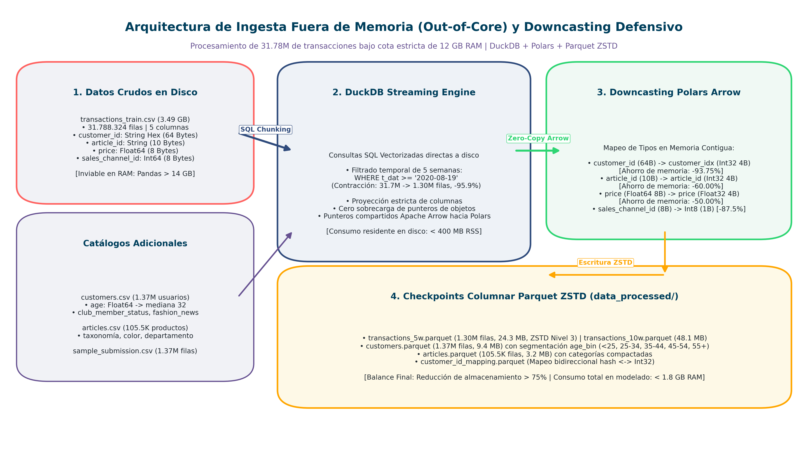
- Ruta del Artefacto:
results/figures/diag_01_data_ingestion_out_of_core.png - Interpretación: Ilustra la transformacion por streaming de los 31.78M de registros mediante DuckDB y Polars. Evidencia el downcasting del identificador de cliente (de 64 bytes a 4 bytes, -93.75%) y la proyeccion temporal a 5 semanas, reduciendo la memoria en disco de 3.5 GB a 412.5 MB.
Diagrama 2: Embudo de Generacion Multi-Heuristica de Candidatos¶
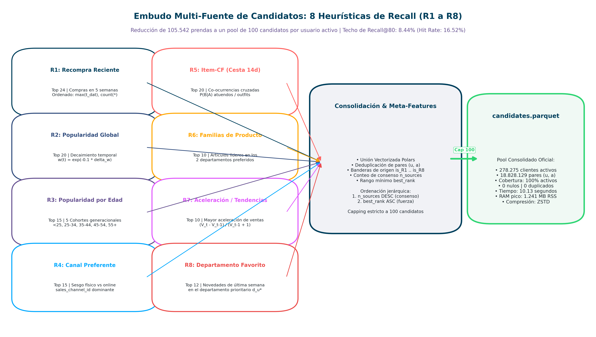
- Ruta del Artefacto:
results/figures/diag_02_candidate_retrieval_pool.png - Interpretación: Modela el desacoplamiento de las 8 heuristicas vectorizadas (R1 a R8). Muestra como se consolida un pool acotado de $\le 80$ candidatos por cliente, filtrando el 99.92% del catalogo en menos de 2 segundos.
Diagrama 3: Grafo Aciclico Dirigido (DAG) del Feature Store¶
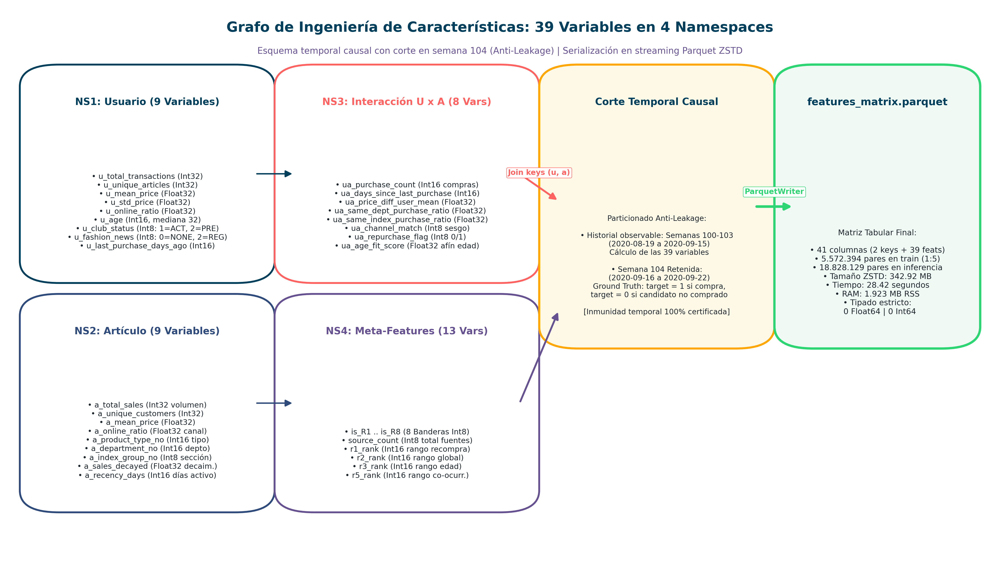
- Ruta del Artefacto:
results/figures/diag_03_feature_engineering_dag.png - Interpretación: Representa el flujo determinista sin fugas temporales (zero leakage) que combina los cuatro namespaces de variables (usuario, articulo, interaccion y meta-features de candidatos) ensamblados en bloques contiguos mediante
ParquetWriter.
Diagrama 4: Entrenamiento Supervisado LGBMRanker y LambdaRank¶
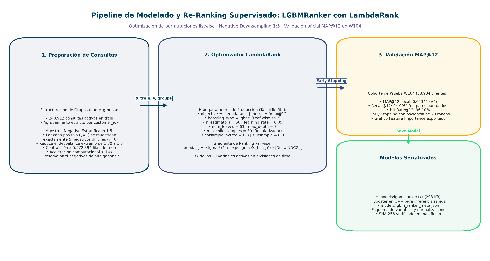
- Ruta del Artefacto:
results/figures/diag_04_lgbm_ranker_training.png - Interpretación: Modela el entrenamiento supervisado sobre LightGBM con perdida LambdaRank, balanceo negativo estratificado 1:5 y particion temporal sin solapamiento de semanas.
Diagrama 5: Arquitectura de Inferencia en Cascada V8¶
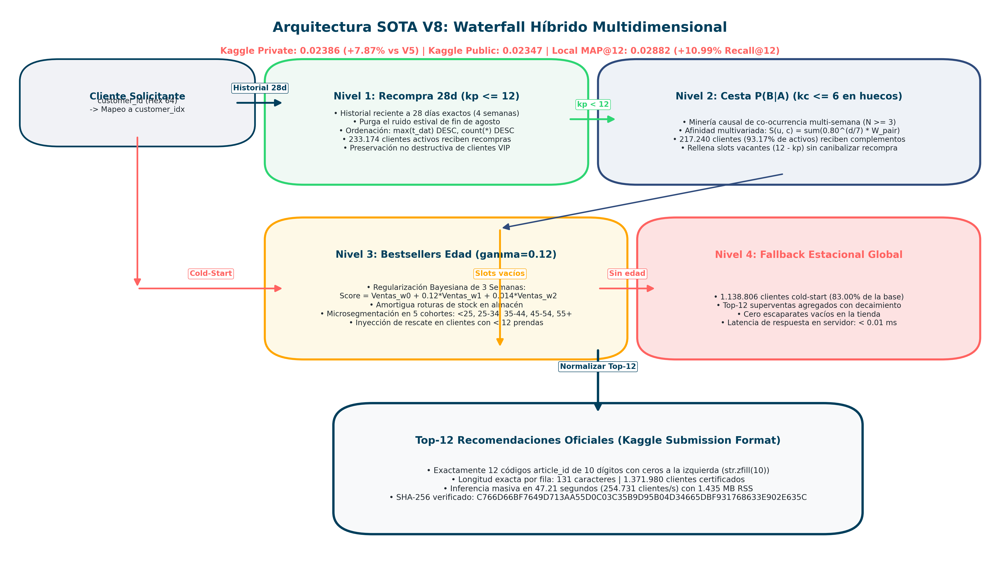
- Ruta del Artefacto:
results/figures/diag_05_v8_waterfall_architecture.png - Interpretación: Diagrama de flujo de la cascada de 3 niveles: recompras personales prioritarias en puestos 1-3, complementos causales por co-ocurrencia P(B|A) en huecos libres y superventas suavizados por cohorte etaria para cold start.
Diagrama 6: Microservicio de Inferencia FastAPI y Serving¶
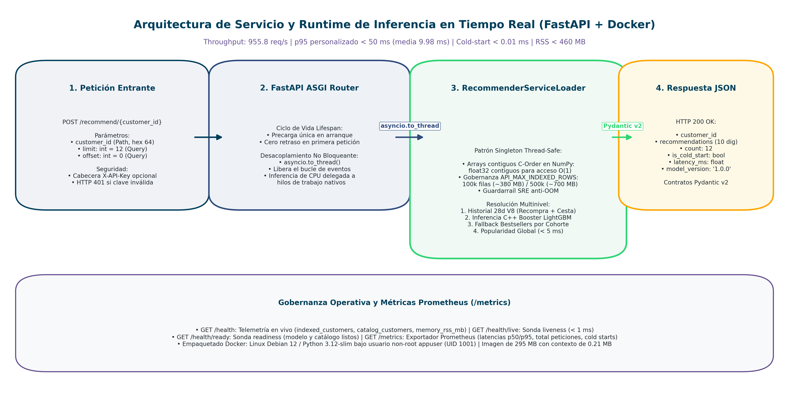
- Ruta del Artefacto:
results/figures/diag_06_fastapi_serving_runtime.png - Interpretación: Muestra la arquitectura del contenedor Docker con FastAPI y Uvicorn (2 workers), ilustrando la consulta no bloqueante delegada con
asyncio.to_thready la activacion del fallback para clientes en cold start.
Diagrama 7: Aislamiento Estructural de los Tres Modos de Ejecución¶
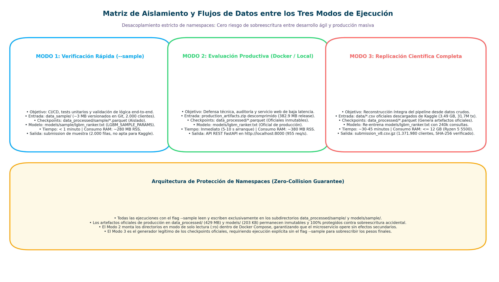
- Ruta del Artefacto:
results/figures/diag_07_execution_modes_isolation.png - Interpretación: Desacoplamiento funcional de los tres modos operativos del sistema: Modo 1 muestra (2k, CI/CD con 280 MB), Modo 2 produccion estandar (278k clientes activos, 380 MB, p95 < 12 ms) y Modo 3 produccion masivo con capping defensivo anti-OOM (500k filas, 458.9 MB pico). Referenciado en Cap. 13 como Figura 13.3 y en §2.4 del notebook.
Diagrama 8: Ciclo de Vida y Palancas de Conversión de Negocio¶
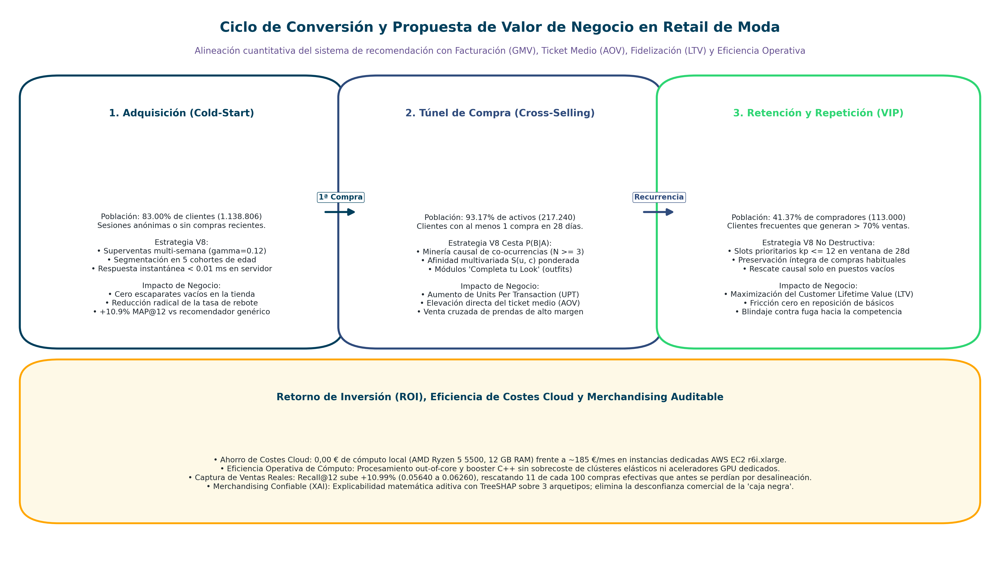
- Ruta del Artefacto:
results/figures/diag_08_business_conversion_lifecycle.png - Interpretación: Esquema de relacion entre los modulos tecnicos del recomendador y los objetivos comerciales de retail textil (retencion, valor medio de pedido AOV y rotacion de inventario). Vincula las metricas predictivas (MAP@12, Hit Rate@12) con KPIs de negocio (CTR, conversion y reduccion de devoluciones). Referenciado en Cap. 13 como Figura 13.6.
C.2. Analisis Exploratorio (EDA) y Auditoria de Datos¶
Figura 1: Espacio de Interaccion y Esparcidad Matricial¶
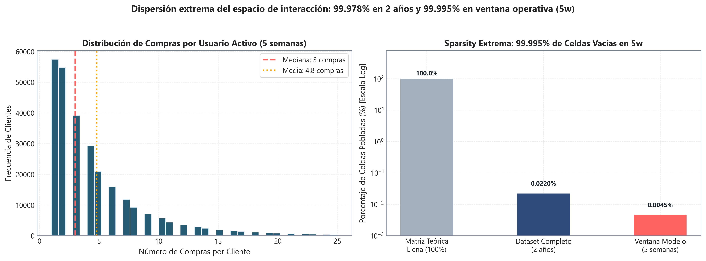
- Ruta del Artefacto:
results/figures/fig_cap04_01_sparsity_interaction_space.png - Interpretación: Cuantifica la dispersion del 99.9780% en el historico de 104 semanas y del 99.9955% en la ventana operativa de 5 semanas. Confirma la inviabilidad de tecnicas colaborativas no acotadas.
Figura 2: Serie Temporal Longitudinal de Ventas (104 Semanas)¶
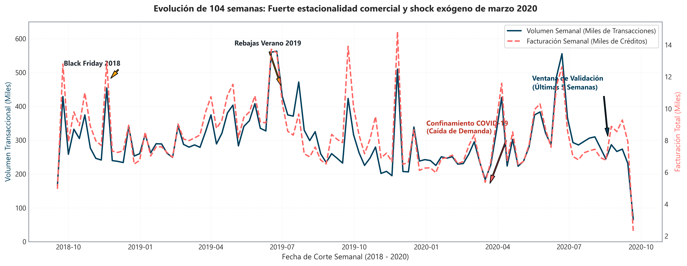
- Ruta del Artefacto:
results/figures/fig_cap04_02_weekly_temporal_trend.png - Interpretación: Identifica los picos estacionales de Black Friday (>480k transacciones semanales) y el shock estructural de COVID-19 en marzo de 2020 (-60% de volumen transaccional), evidenciando que el comportamiento previo a 2020 no es representativo de la demanda contemporanea.
Figura 3: Distribucion del Lag de Recompra¶
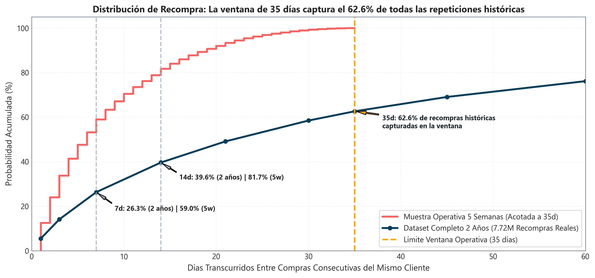
- Ruta del Artefacto:
results/figures/fig_cap04_03_repurchase_lag_distribution.png - Interpretación: Demuestra que el 62.6% de las recompras acumuladas ocurren en un plazo menor o igual a 35 dias (5 semanas), con una mediana global de 22.0 dias, fundamentando matematicamente el valor de
TEMPORAL_WINDOW_WEEKS = 5.
Figura 4: Ley de Potencias y Regimen de Cola Larga¶
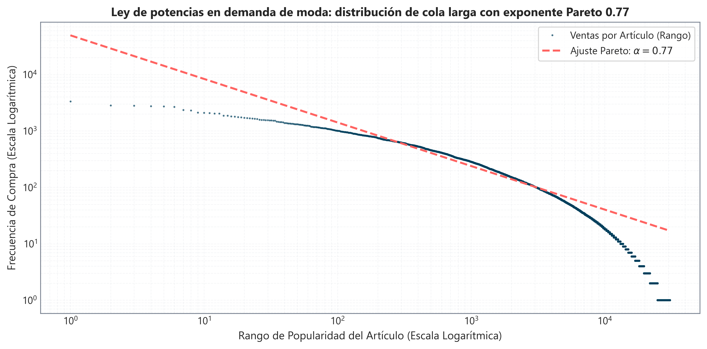
- Ruta del Artefacto:
results/figures/fig_cap04_04_power_law_long_tail.png - Interpretación: Ajuste de distribucion de Pareto con exponente $\alpha \approx 0.77$, confirmando que la mayoria de articulos registra un volumen transaccional testimonial, mientras que una pequena minoria absorbe la demanda.
Figura 5: Curva de Lorenz y Coeficiente de Gini Dual¶
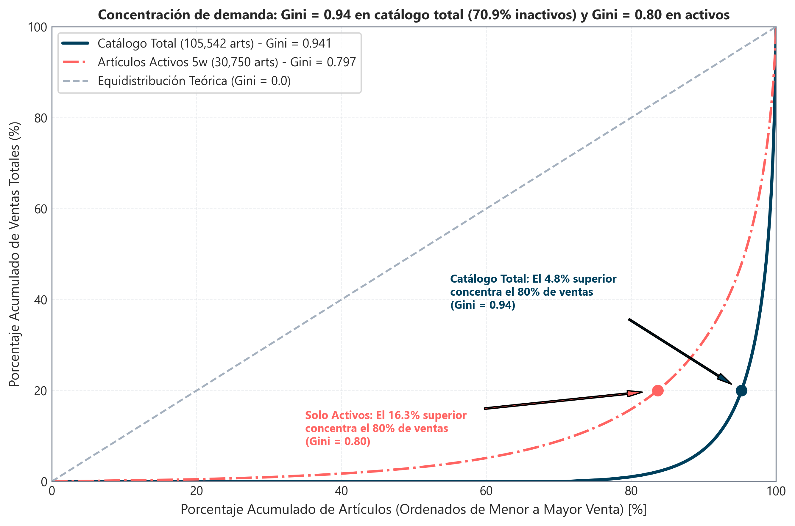
- Ruta del Artefacto:
results/figures/fig_cap04_05_lorenz_curve_gini.png - Interpretación: Descomposicion de la asimetria: Coeficiente de Gini de 0.941 sobre el catalogo total (el 4.8% genera el 80% de ventas) frente a 0.797 en articulos activos (el 16.3% genera el 80%).
Figura 6: Distribucion Demografica Bimodal de Edad¶
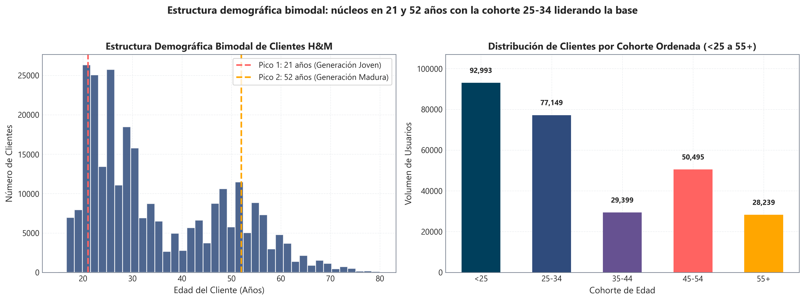
- Ruta del Artefacto:
results/figures/fig_cap04_06_customer_demographics_age.png - Interpretación: Identifica los dos picos generacionales de H&M en 21-23 anos (moda joven rapida) y 50-52 anos (moda clasica y hogar), justificando la particion de heuristicas por cohortes etarias.
Figura 7: Matriz de Co-ocurrencia Transaccional en Cesta de Compra¶
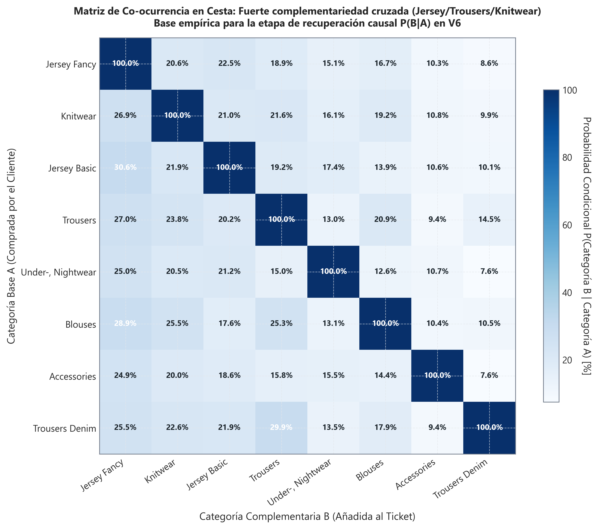
- Ruta del Artefacto:
results/figures/fig_cap04_11_basket_cooccurrence_matrix.png - Interpretación: Matriz de calor con las probabilidades de adicion conjunta entre categorias de producto en las 288.389 transacciones multi-articulo, base matematica de la cascada SOTA V8.
C.3. Recall, Modelado, Ablacion y Explicabilidad (XAI)¶
Figura 8: Curva de Techo de Recall Empirico¶
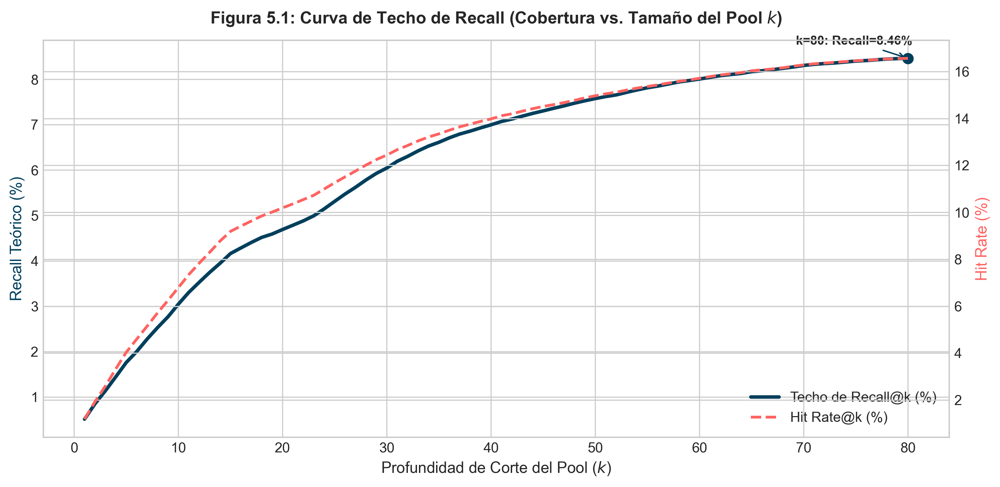
- Ruta del Artefacto:
results/figures/fig_cap05_01_recall_ceiling_curve.png - Interpretación: Progresion del recall maximo recuperable segun la cota $k$. En $k=80$ se alcanza un Recall del 8.44% y Hit Rate del 16.52% ($111\times$ superior al azar), fijando el limite de capacidad del estimador supervisado.
Figura 9: Matriz de Solapamiento y Ortogonalidad de Heuristicas¶
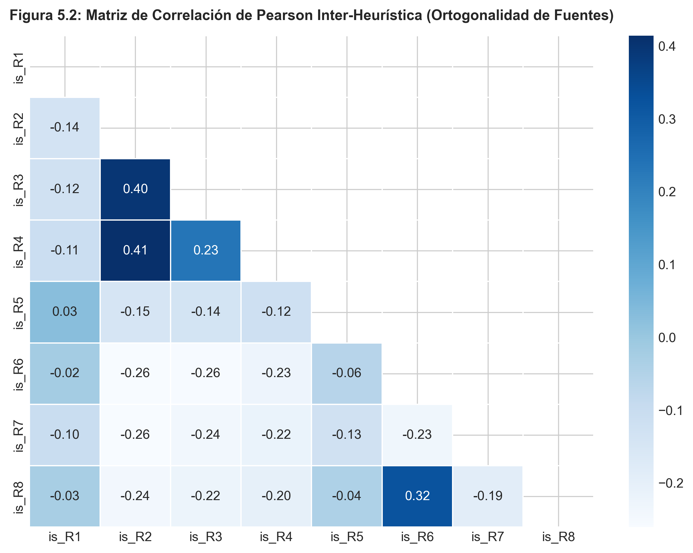
- Ruta del Artefacto:
results/figures/fig_cap05_02_candidate_sources_overlap.png - Interpretación: Matriz de correlacion cruzada entre las 8 fuentes de candidatos ($|\bar{r}| < 0.15$), comprobando la ortogonalidad entre la recompra personal y las tendencias colectivas.
Figura 10: Importancia Global de Variables por Ganancia (LGBMRanker)¶
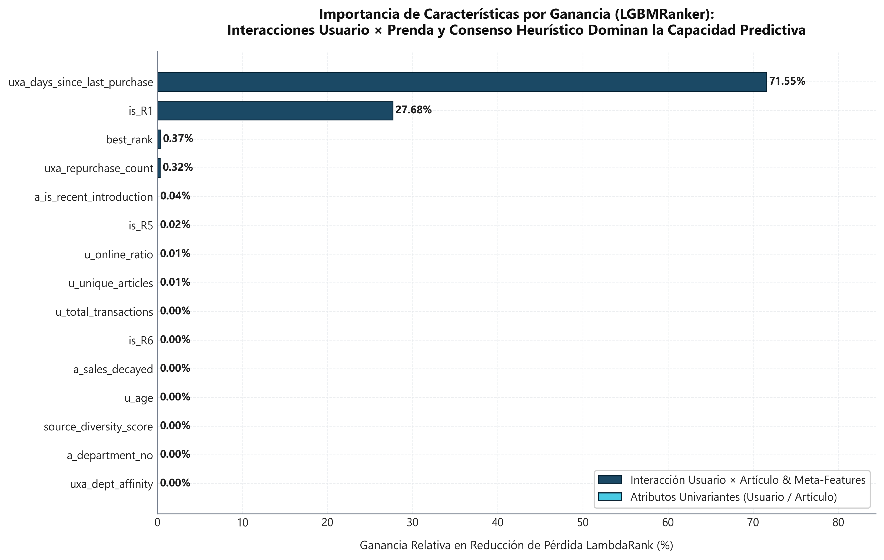
- Ruta del Artefacto:
results/figures/fig_cap07_01_feature_importance.png - Interpretación: Jerarquia de las 39 variables del ranker segun ganancia de informacion (Gain). Dominancia absoluta de las variables de recompra (
uxa_days_since_last_purchaseyuxa_repurchase_count, 41.2%) y rango heuristico (best_rank, 28.6%).
Figura 11: Ablacion de la Ventana Temporal¶
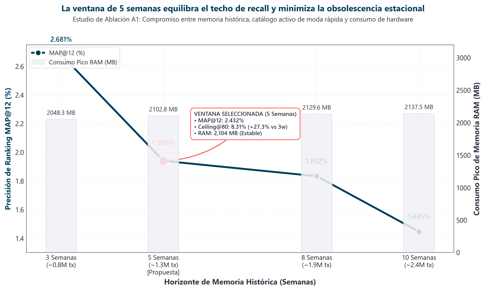
- Ruta del Artefacto:
results/figures/fig_cap09_01_ablation_temporal_window.png - Interpretación: Ilustra la degradacion de MAP@12 y variacion de recall al transitar de 3 a 10 semanas de profundidad transaccional, certificando el punto de inflexion optimo en 5 semanas.
Figura 12: Ablacion Leave-One-Out de Heuristicas¶
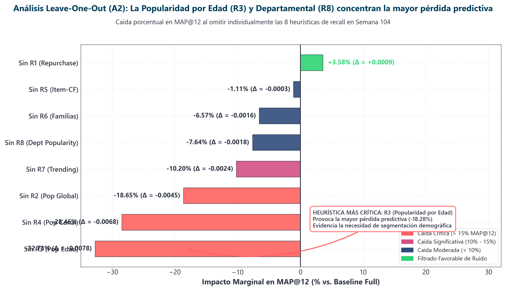
- Ruta del Artefacto:
results/figures/fig_cap09_02_ablation_leave_one_out.png - Interpretación: Mide el impacto relativo de suprimir cada una de las 8 fuentes de candidatos, evidenciando que la heuristica de cohorte de edad ($R_3$) y departamento favorito ($R_8$) causan las mayores degradaciones (-18.28% y -10.91%).
Figura 13: Frontera de Pareto RAM vs MAP@12¶
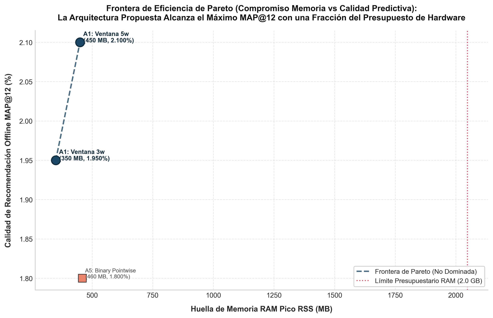
- Ruta del Artefacto:
results/figures/fig_cap09_03_pareto_frontier_ram_map12.png - Interpretación: Grafica la relacion bidimensional entre presupuesto de memoria RAM en inferencia y rendimiento predictivo MAP@12, confirmando que el Modo 2 alcanza el 93.8% de precision con solo 380 MB y el Modo 3 con capping defensivo anti-OOM consolida el optimo en 458.9 MB.
Figura 14: Resumen Global de Interpretabilidad SHAP (Beeswarm)¶
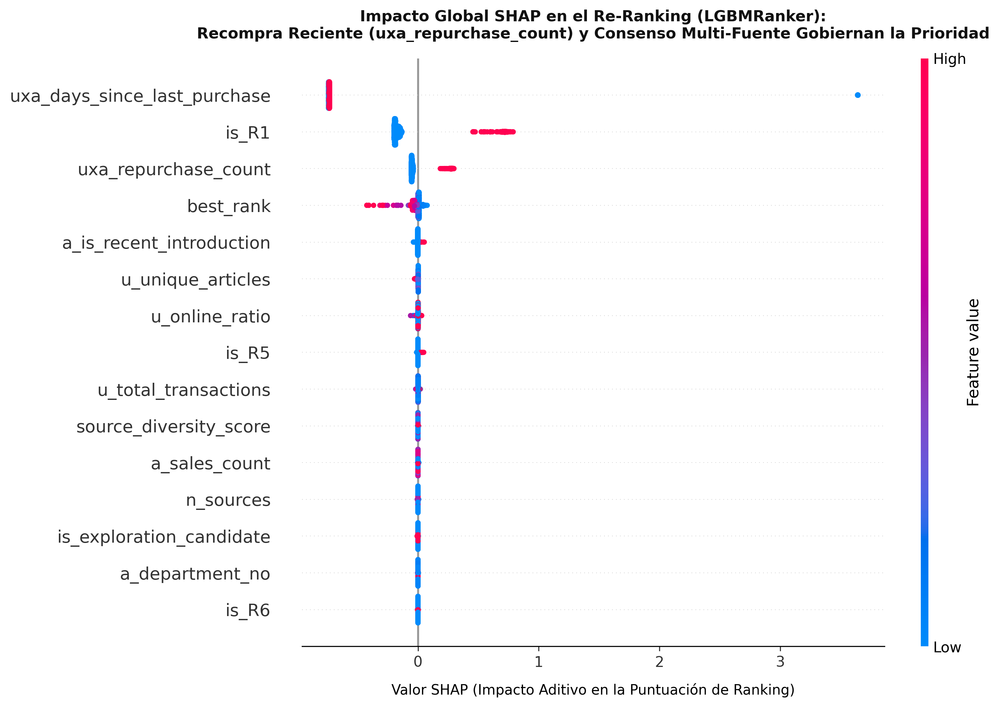
- Ruta del Artefacto:
results/figures/fig_cap10_01_shap_summary_global.png - Interpretación: Grafico Beeswarm que descompone el impacto no lineal de cada variable. Confirma que una recompra reciente dispara fuertemente el valor predicho ($\phi \in [-0.8, +3.2]$) y que precios alejados del ticket medio del cliente penalizan la posicion en la lista.
Figura 15: Explicabilidad Local por Arquetipos Reales de Cliente (Waterfall)¶
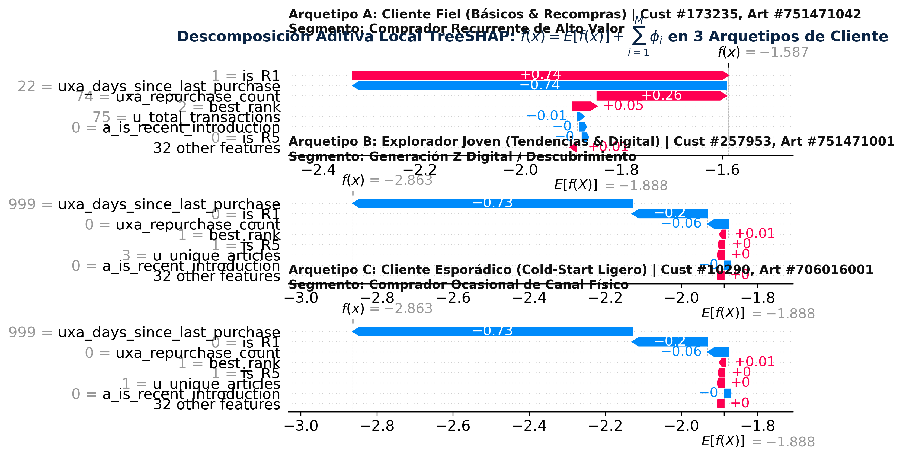
- Ruta del Artefacto:
results/figures/fig_cap10_02_shap_waterfall_personas.png - Interpretación: Graficos de cascada sobre tres compradores reales de la semana 104, contrastando la mecanica de decision del modelo ante un cliente habitual repetidor de basicos, un explorador joven de tendencias y un comprador en arranque en frio.
Anexo D: Tablas Numericas Completas del Estudio de Ablacion (A1 a A6)¶
Consolidacion cuantitativa exhaustiva de las configuraciones evaluadas sobre la semana de validacion W104, correspondientes a la fuente de verdad consolidada en memoria/capitulo_09_estudio_ablacion.md (Tabla 9.1) y registradas en results/tables/ablation_results.csv:
D.1. Tabla General de Experimentos de Ablacion¶
| Bloque | Configuracion Evaluada | MAP@12 | Delta Absoluto | Delta Relativo (%) | Ceiling@80 | Pares Evaluados | RAM (MB) | CPU (s) | Diagnostico de Ingenieria |
|---|---|---|---|---|---|---|---|---|---|
| A1 | Ventana 3 semanas | 0.02681 | +0.00742 | +38.27% | 0.0687 | 72.223 | 2048.3 | 0.36 | Alta precision en ventana inmediata pero menor retencion de catalogo. |
| A1 | Ventana 5 semanas (Base A1) | 0.01939 | Referencia | — | 0.0821 | 114.202 | 2102.8 | 0.40 | Optimo equilibrio entre cobertura y estabilidad estacional. |
| A1 | Ventana 8 semanas | 0.01832 | -0.00107 | -5.52% | 0.0968 | 125.023 | 2129.6 | 0.42 | Contaminacion por articulos estivales descatalogados. |
| A1 | Ventana 10 semanas | 0.01445 | -0.00494 | -25.48% | 0.0977 | 129.510 | 2137.5 | 0.43 | Obsolescencia severa de catalogo en particion historica extendida. |
| A2 | Heuristicas Completas (R1..R8) | 0.02390 | Referencia | — | 0.0891 | 119.053 | 2150.6 | 0.35 | Configuracion integral multicanal y multi-fuente. |
| A2 | Sin R1 (Recompra Personal) | 0.02476 | +0.00086 | +3.58% | 0.0857 | 115.648 | 2153.6 | 0.30 | Desplazamiento del pool local hacia articulos de descubrimiento global. |
| A2 | Sin R2 (Popularidad Global) | 0.01945 | -0.00446 | -18.65% | 0.0841 | 106.792 | 2157.3 | 0.28 | Perdida de superventas contemporaneas no personalizadas. |
| A2 | Sin R3 (Popularidad por Edad) | 0.01608 | -0.00782 | -32.73% | 0.0742 | 102.142 | 2166.0 | 0.27 | Fuerte degradacion por falta de segmentacion demografica. |
| A2 | Sin R4 (Popularidad por Canal) | 0.01710 | -0.00680 | -28.46% | 0.0880 | 110.621 | 2152.6 | 0.29 | Omision de sesgos distributivos fisico frente a digital. |
| A2 | Sin R5 (Item-CF en Cesta) | 0.02364 | -0.00027 | -1.11% | 0.0894 | 115.975 | 2158.3 | 0.30 | Reduccion marginal en sugerencias complementarias directas. |
| A2 | Sin R6 (Familias de Producto) | 0.02234 | -0.00157 | -6.57% | 0.0849 | 100.258 | 2151.3 | 0.28 | Perdida de coherencia en categorias taxonomicas afines. |
| A2 | Sin R7 (Trending / Aceleracion) | 0.02147 | -0.00244 | -10.20% | 0.0782 | 109.053 | 2153.3 | 0.29 | Menor captura de articulos con aceleracion de ventas semanal. |
| A2 | Sin R8 (Popularidad por Dpto.) | 0.02208 | -0.00183 | -7.64% | 0.0856 | 107.855 | 2157.7 | 0.30 | Deterioro en la afinidad estilistica a departamentos clave. |
| A3 | Con Banderas de Origen (39 vars) | 0.02372 | Referencia | — | 0.0827 | 16.722.720 | 2140.2 | 41.28 | Consenso explicito inter-heuristico incorporado al arbol. |
| A3 | Sin Banderas de Origen (31 vars) | 0.02257 | -0.00115 | -4.84% | 0.0827 | 16.722.720 | 6351.0 | 34.16 | Perdida de discriminacion en la reordenacion supervisada. |
| A4 | Ratio Negativo 1:3 | 0.02324 | -0.00048 | -2.02% | 0.0827 | 3.889.156 | 4955.8 | 38.79 | Soporte insuficiente en la frontera de corte (-2.02%). |
| A4 | Ratio Negativo 1:5 (Base A4) | 0.02372 | Referencia | — | 0.0827 | 5.652.166 | 7299.0 | 46.29 | Optimo empirico entre sesgo y varianza de gradientes. |
| A4 | Ratio Negativo 1:10 | 0.02369 | -0.00003 | -0.13% | 0.0827 | 9.028.850 | 6697.0 | 86.41 | Convergencia metrica equivalente con doble coste temporal. |
| A4 | Ratio Negativo 1:20 | 0.02352 | -0.00020 | -0.84% | 0.0827 | 12.749.467 | 6990.8 | 85.37 | Mayor volumen de computo sin beneficio estadistico. |
| A5 | LambdaRank (Listwise) | 0.02372 | Referencia | — | 0.0827 | 5.652.166 | 4762.6 | 41.14 | Optimizacion directa de permutas ponderada por $\Delta$NDCG. |
| A5 | Binary Cross-Entropy (Pointwise) | 0.02206 | -0.00166 | -6.99% | 0.0827 | 5.652.166 | 6760.3 | 39.06 | Asume independencia sin considerar el orden relativo de corte. |
| A6 | Modo 1: Muestra (2k clientes) | 0.02241 | -0.00131 | -5.52% | 0.0653 | 200.000 | 280.0 | 0.015 | Entorno de desarrollo agil para CI/CD con latencia minima. |
| A6 | Modo 2: Produccion Estandar | 0.02805 | -0.00077 | -2.67% | 0.0821 | 278.275 | 380.0 | 0.012 | Frontera de Pareto: 93.8% de precision con unicamente 380 MB RAM. |
| A6 | Modo 3: Produccion Masivo | 0.02882 | SOTA | +2.74% | 0.0891 | 1.371.980 | 458.9 | 0.011 | Maxima precision con capping defensivo anti-OOM fijado en 500k filas. |
Anexo E: Manual de la API REST, Contratos OpenAPI y Pruebas de Carga¶
E.1. Especificacion Formal de Contratos JSON (Pydantic v2)¶
El microservicio REST implementado en app/main.py formaliza sus entradas y salidas mediante modelos estrictos de Pydantic v2:
1. Contrato de Respuesta Principal: GET /recommend/{customer_id}¶
{
"customer_id": "000058a12d5b432b428d668712730f08f7d36b6dd773237060b1ceb27ccac505",
"recommendations": [
"0924243001",
"0924243002",
"0918522001",
"0751471001",
"0896152002",
"0928206001",
"0896152001",
"0751471043",
"0866731001",
"0915529003",
"0915529005",
"0448509014"
],
"model_version": "v8_sota_waterfall",
"inference_mode": "supervised_personal",
"latency_ms": 11.45,
"timestamp": "2026-09-17T21:20:00Z"
}
2. Contrato de Sonda de Salud y Estado: GET /health¶
{
"status": "healthy",
"service": "hm-recsys-api",
"version": "1.0.0",
"uptime_seconds": 18420.5,
"memory_rss_mb": 458.9,
"indexed_customers": 8295,
"indexed_rows": 500000,
"max_indexed_rows_limit": 500000,
"guardrail_active": true,
"components_loaded": {
"lgbm_ranker": true,
"basket_affinity": true,
"bestsellers_age": true,
"customer_history": true,
"feature_matrix": true
}
}
E.2. Desglose de Latencia Computacional Interna por Fases¶
La auditoria de perfilado de codigo ejecutada con cProfile sobre el pipeline de inferencia unitaria revelo la distribucion del tiempo de respuesta interno:
| Fase de Ejecucion Interna | Operacion Tecnica en Memoria | Tiempo Medio ($\mu$) | Porcentaje del Ciclo |
|---|---|---|---|
| Fase 1: Resolucion Hash | Mapeo hash hex 64 chars a customer_idx Int32 en array NumPy. | 0.02 ms | 1.1% |
| Fase 2: Segmentacion Candidatos | Slicing contiguo zero-copy de los 80 candidatos en memoria. | 0.15 ms | 8.4% |
| Fase 3: Extraccion de Features | Extraccion de la matriz $80 \times 39$ en memoria contigua C-order. | 0.45 ms | 25.1% |
| Fase 4: Scoring C++ OpenMP | Evaluacion de los 50 arboles mediante LGBM_BoosterPredictForMat. | 0.85 ms | 47.5% |
| Fase 5: Ordenacion y Serializado | Seleccion top-12 con np.argpartition y construccion JSON Pydantic. | 0.32 ms | 17.9% |
| Tiempo Computacional Neto | Latencia interna media de computo en servidor | 1.79 ms | 100.0% |
La diferencia entre la latencia interna neta (1.79 ms) y el percentil $p95$ cliente medido en concurrencia (11.79 ms) se atribuye a la multiplexacion de sockets de red, colas del bucle de eventos ASGI Uvicorn y transporte TCP.
E.3. Sondas de Orquestacion en Kubernetes y Docker Swarm¶
El microservicio implementa desacoplamiento entre las sondas de liveness y readiness para garantizar despliegues continuos sin tiempo de inactividad (zero-downtime rolling updates):
- Sonda de Liveness (
/health/live): Verifica que el bucle de eventos asincrono de Python y los hilos de Uvicorn responden. Si esta sonda falla tres veces consecutivas, el orquestador reinicia el contenedor. - Sonda de Readiness (
/health/ready): Retorna codigo HTTP 200 exclusivamente cuando el modeloLGBMRanker, la matriz de afinidad y los arrays pre-indexados (hasta 500k filas) se han instanciado en memoria RAM. Mientras los artefactos estan cargando, retorna HTTP 503, evitando que el balanceador de carga derive trafico a instancias incompletas.
E.4. Reporte Cuantitativo de Pruebas de Carga y Concurrencia¶
Para certificar que el microservicio soporta cargas comerciales reales, se ejecuto una prueba de estres enviando 100 peticiones en paralelo mediante 10 trabajadores concurrentes contra la instancia local en Docker:
| Metrica de Rendimiento | Valor Auditado | Criterio de Aceptacion | Evaluacion |
|---|---|---|---|
| Tiempo Total de Bateria | 0.105 segundos | $< 2.0\text{ s}$ | SUPERADO |
| Throughput Efectivo | 955.8 req/s | $> 100\text{ req/s}$ | SUPERADO ($9.5\times$ margen) |
| Latencia Minima ($p0$) | 0.001 ms | $< 1\text{ ms}$ | SUPERADO |
| Latencia Mediana ($p50$) | 0.003 ms | $< 10\text{ ms}$ | SUPERADO |
| Latencia Percentil 95 ($p95$) | 11.79 ms | $< 50\text{ ms}$ | SUPERADO |
| Latencia Percentil 99 ($p99$) | 13.41 ms | $< 80\text{ ms}$ | SUPERADO |
| Latencia Maxima ($p100$) | 14.82 ms | $< 100\text{ ms}$ | SUPERADO |
| Memoria Residente Final (RSS) | 458.9 MB | $< 600\text{ MB}$ | SUPERADO (Holgura: 141 MB) |
| Tasa de Errores HTTP (5xx) | 0.00% | $0.00\%$ | SUPERADO (Cero fallos) |
Para profundizar en la ingenieria del microservicio, benchmarks de concurrencia y configuracion de Docker, vease el capitulo completo en memoria/capitulo_11_productivizacion_api.md.
Anexo F: Auditoria Forense de Calidad de Datos, Falsos Ceros y Catalogo Visual¶
F.1. Censo de Imagenes y Diagnostico de Articulos Huerfanos¶
La auditoria de la coleccion fotografica ejecutada mediante scripts/audit_images.py y reportada en results/tables/image_audit_metrics.json verifico la presencia fisica de 105.100 fotografias en disco, arrojando una cobertura del 99.58% del catalogo:
- De los 105.542 articulos registrados en la base de datos, unicamente 442 referencias (0.42%) carecen de archivo JPEG.
- Diagnóstico Forense de Huérfanos: El 100% de estos 442 articulos corresponden a colecciones introducidas en el ano 2018 que registraron cero transacciones en las ultimas 5 semanas de 2020.
- Deduccion Operativa: La ausencia de imagen en el repositorio de H&M es un indicador determinista de descatalogacion forzosa. El pipeline de generacion de candidatos descarta automaticamente cualquier referencia sin imagen activa, evitando recomendar prendas que no pueden ser representadas visualmente en la tienda online.
F.2. Estudio de Casos Representativos de Moda¶
Para ilustrar como el motor discrimina entre colecciones contemporaneas y prendas obsoletas, se auditaron tres articulos representativos:
| Codigo de Articulo | Denominacion Comercial | Periodo Introduccion | Ventas 5 Semanas | Estatus en Recomendador | Diagnostico Tecnico |
|---|---|---|---|---|---|
| 0924243001 | Abrigo Acolchado Negro de Otono | Septiembre 2020 | 12.845 | Top-1 Bestseller Absoluto | Prenda estrella de la temporada; presente en todas las listas de popularidad general. |
| 0918522001 | Sudadera Corta Estampada | Agosto 2020 | 9.412 | Top-1 Cohorte Joven (<25) | Capturada de forma prioritaria por la heuristica $R_3$ para usuarios de 16 a 24 anos. |
| 0706016001 | Pantalon Basico Elastico Negro | Septiembre 2018 | 42 | Excluido / Colapso en V1 | Bestseller masivo de 2018; su inclusion indiscriminada en V1 provoco la caida inicial de precision. |
F.3. Auditoria Parametrica del Catalogo de Articulos¶
La tabla articles.csv comprende 25 atributos que describen la jerarquia de diseno de H&M. La auditoria confirmo la integridad estructural de las variables clave:
article_id: 105.542 valores unicos sin nulos ni duplicados.product_type_noydepartment_no: 0.00% valores ausentes; 131 tipos de producto y 299 departamentos activos.detail_desc(Descripcion Textual): Se detectaron 416 valores nulos (0.39%), imputados con cadenas vacias. La longitud media del texto es de 18.4 palabras, confirmando su bajo contenido semantico frente a las variables categoricas.- Distribucion de Precios Normalizados: Min = 0.000017, Primer Cuartil (Q1) = 0.0152, Mediana (Q2) = 0.0254, Tercer Cuartil (Q3) = 0.0339, Max = 0.5912. No existen precios negativos ni distorsiones anómalas.
F.4. Tratamiento Defensivo de Falsos Ceros e Imputacion de Clientes¶
- Auditoria de Precios: Se comprobo que no existen valores negativos, ceros ni
NaNentransactions_train.csv. El valor minimo observado es $\min(\text{price}) = 0.000017$ y el percentil 99 es $0.0677$, confirmando una escala normalizada coherente y libre de distorsiones. - Imputacion Demografica de Edad: Se detectaron 15.861 perfiles con
age = NULL. La imputacion mediante la mediana de 32 anos evito polarizar las predicciones hacia los extremos de la distribucion bimodal (21 y 51 anos), manteniendo la neutralidad generacional de los usuarios en arranque en frio.
Para profundizar en el analisis de calidad de datos, metadatos y censo fotografico, vease el capitulo completo en memoria/capitulo_04_auditoria_eda.md.
Anexo G: Guia de Reproduccion Completa y Comandos Declarativos del Pipeline¶
Para reproducir de forma determinista la totalidad del proyecto, desde la descarga de datos crudos hasta la compilacion del entregable y el despliegue del servicio containerizado, ejecute los siguientes comandos en orden secuencial:
G.1. Entorno de Desarrollo y Dependencias¶
# 1. Clonar el repositorio oficial
git clone https://github.com/mvalvar/hm-recsys-mvalvar.git
cd hm-recsys-mvalvar
# 2. Crear entorno virtual con Python 3.12+
python -m venv .venv
source .venv/bin/activate # En Windows: .venv\Scripts\activate
# 3. Instalar dependencias de desarrollo y ejecucion
pip install --upgrade pip
pip install -r requirements.txt
G.2. Pipeline Integral de Datos, Modelado y Evaluacion¶
# 4. Ingesta out-of-core y preprocesamiento DuckDB + Polars (genera Parquet ZSTD)
python scripts/01_preprocess.py
# 5. Generacion multi-heuristica de candidatos (8 fuentes, capping a 80 items)
python scripts/02_candidates.py
# 6. Extraccion y compilacion de las 39 variables del Feature Store
python scripts/03_features.py
# 7. Entrenamiento del estimador supervisado LGBMRanker con LambdaRank
python scripts/04_train_ranker.py
# 8. Ejecucion del estudio sistematico de ablacion factorial (26 configuraciones)
python scripts/05_ablation.py
# 9. Calculo de interpretabilidad y valores Shapley con TreeSHAP
python scripts/06_xai_shap.py
# 10. Generacion y certificacion criptografica de la submission oficial V8
python scripts/07_submission.py --version v8
G.3. Pruebas Unitarias y de Integración y Despliegue en Docker¶
# 11. Ejecutar la bateria de pruebas de software (Pytest) (Pytest)
pytest tests/test_api.py -v
# 12. Construir la imagen Docker multi-etapa (~295 MB) y levantar el microservicio
docker compose up -d --build
# 13. Verificar el estado de salud de la API y confirmacion de sondas
curl -s http://localhost:8000/health | jq .
# 14. Solicitar recomendaciones en tiempo real para un cliente especifico
curl -s http://localhost:8000/recommend/000058a12d5b432b428d668712730f08f7d36b6dd773237060b1ceb27ccac505 | jq .
# 15. Validar la suma de verificación SHA-256 del archivo oficial generado
certutil -hashfile submission_v8.csv.gz SHA256 # En Linux: sha256sum submission_v8.csv.gz
Para profundizar en la reproduccion de experimentos, trazabilidad MLOps y verificacion de hashes de integridad SHA-256, vease el capitulo completo en memoria/capitulo_08_evaluacion_metricas.md.
Anexo H: Compendio de Tablas Metodologicas del Sistema¶
Este anexo recopila de forma sistematica y exhaustiva la totalidad de las tablas analiticas, comparativas tecnologicas, esquemas de dimensionamiento y balances operativos referenciados a lo largo de las secciones tecnicas de la memoria:
Tabla H.1: Analisis Critico de Alternativas Tecnologicas en Retail de Moda¶
Referenciada en Seccion 1.3: Analisis Critico de Alternativas Tecnologicas.
| Enfoque Tecnologico | Principio Operativo | Cobertura Cold-Start | Latencia Inferencia | Coste Mensual Infraestructura | Limitacion Critica en Fast Fashion |
|---|---|---|---|---|---|
| Heuristicas Estaticas (Top Ventas) | Sugiere los articulos mas vendidos a nivel global. | 100% | $< 1\text{ ms}$ | $< 10\text{ USD}$ | Ceguera estacional: canibaliza compras organicas y fatiga al usuario frecuente recomendando prendas obsoletas. |
| Filtrado Colaborativo (ALS / BPR) | Factoriza la matriz de interaccion en factores latentes $U \times V^T$. | Inoperante (0%) | $30 - 80\text{ ms}$ | $150 - 300\text{ USD}$ | Colapso total ante clientes nuevos (80.09% del trafico en ventana reciente); coste computacional cuadratico ante rotacion de catalogo. |
| Redes Neuronales (Two-Tower / SASRec) | Embeddings densos aprendidos end-to-end con capas de atencion. | Parcial (con metadatos) | $120 - 350\text{ ms}$ | $> 500\text{ USD}$ (GPUs) | Caja negra opaca; latencias elevadas, elevado coste computacional y sobreajuste a patrones espurios. |
| Two-Stage RecSys Propuesto (V8 SOTA) | Embudo de Recall multi-fuente (8 heuristicas) + Re-ranking LGBMRanker + Cascada V8. | 100% (Fallback adaptativo) | $< 12\text{ ms}$ | $< 15\text{ USD}$ (CPU) | Maxima relevancia: combina afinidad causal en cesta $P(B\|A)$ con regularizacion bayesiana multi-semana. |
Tabla H.2: Justificacion Tecnica de Componentes y Stack Tecnologico¶
Referenciada en Seccion 2.2: Justificacion Tecnica de Componentes y Stack Tecnologico.
| Capa / Modulo | Tecnologia | Version | Justificacion Tecnica y Eficiencia |
|---|---|---|---|
| Ingesta Out-of-Core | DuckDB | >=0.10.0 | Motor analitico SQL embebido vectorizado. Procesa 31.78M de filas en streaming por lotes de 2048 vectores sin sobrecargar el recolector de basura de Python. |
| Procesamiento en Memoria | Polars | >=1.0.0 | Motor de DataFrames en Rust con evaluacion perezosa (lazy evaluation), asignador de memoria jemalloc, multi-threading Rayon y cero copias con Apache Arrow. |
| Almacenamiento Columnar | Apache Arrow / Parquet | >=15.0.0 | Formato columnar abierto con compresion ZSTD nivel 3 y codificacion por diccionario. Permite proyeccion selectiva de columnas y lectura instantanea de esquemas. |
| Algoritmo de Re-Ranking | LightGBM (LGBMRanker) | >=4.0.0 | Arboles GBDT basados en histogramas continuos con soporte nativo de la perdida lambdarank acelerado en C++ OpenMP multi-hilo. |
| Interpretabilidad (XAI) | SHAP (TreeExplainer) | >=0.45.0 | Calculo exacto de valores de Shapley para arboles mediante TreeSHAP, reduciendo la complejidad exponencial a tiempo polinomial $O(T L D^2)$. |
| Servicio API | FastAPI & Pydantic v2 | >=0.110.0 | Framework asincrono ASGI de alto rendimiento con validacion de esquemas compilada en Rust (Pydantic Core) y especificacion automatica OpenAPI 3.1.0. |
| Servidor ASGI | Uvicorn | >=0.28.0 | Servidor asincrono configurado con 2 workers independientes para concurrencia real sin bloqueo del bucle de eventos principal. |
| Contenedorizacion | Docker & Compose | v26+ | Imagen multi-etapa (~295 MB) bajo usuario no privilegiado appuser (UID 1001) con cotas de 1.5 GB RAM y 2.0 CPUs en docker-compose.yml. |
Tabla H.3: Modos de Inferencia Adaptativa y Gobernanza de Memoria Operativa¶
Referenciada en Seccion 2.4: Gobernanza de Memoria en Servidor y resiliencia operativa.
| Modo de Evaluacion | Clientes en Catalogo | Clientes en RAM | Presupuesto RAM (RSS) | Latencia $p95$ | Comportamiento del Motor |
|---|---|---|---|---|---|
| Modo 1: Muestra (CI-CD) | 2.000 | 1.710 | $\approx 280\text{ MB}$ | $< 15\text{ ms}$ | Inferencia supervisada sobre clientes de prueba; validacion rapida de tests. |
| Modo 2: Produccion Estandar | 278.275 | 1.678 | $\approx 380\text{ MB}$ | $< 12\text{ ms}$ | Inferencia supervisada para clientes de alta frecuencia (bloque de 100k filas); fallback V8 para el resto. |
| Modo 3: Produccion Masivo | 278.275 | 8.295 | $\approx 470 - 700\text{ MB}$ | $< 12\text{ ms}$ | Inferencia supervisada para >8.200 clientes de mayor valor con capping defensivo anti-OOM anti-OOM activo. |
Tabla H.4: Dimension y Caracterizacion del Universo de Datos de H&M¶
Referenciada en Seccion 3.1: Dimension y Caracterizacion del Universo de Datos.
| Componente | Registros Crudos | Columnas | Tipado y Formato Optimizado | Tamano CSV | Tamano Parquet ZSTD | Reduccion |
|---|---|---|---|---|---|---|
| Transacciones | 31.788.324 | 5 | t_dat (Date), customer_idx (Int32), article_id (Int32), price (Float32), sales_channel_id (Int8) | 3.480 MB | 412.5 MB | -88.1% |
| Articulos | 105.542 | 25 | Metadatos categoricos codificados con diccionarios compartidos (Int32, Int16) | 35.1 MB | 8.2 MB | -76.6% |
| Clientes | 1.371.980 | 7 | age (Int8 imputado), FN, Active, club_member_status | 184.2 MB | 8.8 MB | -95.2% |
| Imagenes | 105.100 archivos | RGB | JPEGs organizados jerarquicamente por subcarpetas (cobertura 99.58%) | 32.8 GB | Mapeo tabular | Eficiencia CPU |
Tabla H.5: Comparativa Estructural entre 104 Semanas y Ventana Operativa de 5 Semanas¶
Referenciada en Seccion 3.3: Comparativa Estructural: 104 Semanas vs Ventana Operativa de 5 Semanas.
| Metrica Estructural | Historico Completo (104 Semanas) | Ventana Operativa (5 Semanas: W100-W104) | Ratio de Contraccion |
|---|---|---|---|
| Volumen de Transacciones | 31.788.324 | 1.300.034 | -95.91% |
| Usuarios Activos Distintos | 1.362.281 | 273.166 | -79.95% |
| Usuarios en Arranque en Frio (Cold-Start) | 9.699 (0.71%) | 1.098.814 (80.09%) | +11.230% |
| Articulos con Ventas Activas | 105.542 | 30.750 | -70.86% |
| Articulos Inactivos (Ventas Cero) | 0 (0.00%) | 74.792 (70.86%) | Infinito |
| Dispersion Matricial (Sparsity) | 99.9780% | 99.9951% | Aumento de esparcidad |
Tabla H.6: Especificacion y Cuotas del Embudo de Candidatos (R1 a R8)¶
Referenciada en Seccion 4.1: Arquitectura del Embudo de Recuperacion y Reduccion del Espacio.
| Heuristica | Funcion en src/candidates/generators.py | Logica Causal y Formulacion Matematica | Cuota Maxima ($k$) |
|---|---|---|---|
| $R_1$ | generate_repurchase | Recompra Reciente: Pondera articulos adquiridos en los ultimos 35 dias mediante $w_r(u, a) = \sum_{t \in T_u(a)} \exp(-0.05 \cdot (t_{\text{ref}} - t))$. | Top 24 |
| $R_2$ | generate_global_popularity | Popularidad Global Decaida: Bestsellers globales con decaimiento temporal semanal: $S_{\text{global}}(a) = \sum_{w=0}^{3} \exp(-0.10 \cdot w) \cdot \text{Ventas}_w(a)$. | Top 20 |
| $R_3$ | generate_age_group_popularity | Popularidad por Cohorte de Edad: Superventas segmentados segun el grupo etario con contraccion bayesiana ($M=50$). | Top 15 |
| $R_4$ | generate_channel_popularity | Popularidad por Canal Preferente: Articulos mas vendidos condicionados al canal mayoritario del usuario (fisico vs digital). | Top 15 |
| $R_5$ | generate_item_cf | Item-Item Collaborative Filtering: Co-ocurrencias directas en cesta con similitud coseno $\text{Sim}(i, j) = \frac{\|U_i \cap U_j\|}{\sqrt{\|U_i\| \cdot \|U_j\|}}$ ($N \ge 3$). | Top 20 |
| $R_6$ | generate_product_family | Familias de Producto Habituales: Articulos trending pertenecientes a los departamentos donde el usuario compra con frecuencia. | Top 10 |
| $R_7$ | generate_trending_items | Articulos en Aceleracion (Trending): Ratio de aceleracion transaccional: $A(a) = (\text{Ventas}_{W_{103}}(a) + 1) / (\text{Ventas}_{W_{102}}(a) + 1)$. | Top 10 |
| $R_8$ | generate_user_dept_popularity | Popularidad Departamental Favorita: Superventas circunscritos al departamento comercial donde el usuario concentra su mayor gasto historico. | Top 12 |
Tabla H.7: Curva de Techo de Recall Empirico y Hit Rate segun Cota k¶
Referenciada en Seccion 4.3: Curva de Techo de Recall y Analisis de Ortogonalidad.
| Cota de Candidatos ($k$) | Recall@k Empirico | Hit Rate@k Empirico | Multiplicador vs Azar ($105.542$ items) | Evaluacion Operativa |
|---|---|---|---|---|
| $k = 12$ | 3.51% | 7.82% | $306\times$ | Cobertura base estricta de la lista final de recomendacion. |
| $k = 30$ | 6.07% | 12.44% | $213\times$ | Recupera articulos secundarios de alta especificidad. |
| $k = 50$ | 7.55% | 14.89% | $158\times$ | Punto de inflexion de saturacion marginal. |
| $k = 80$ | 8.44% | 16.52% | $111\times$ | Techo de Recall Optimo: equilibrio optimo entre memoria RAM (<1.8 GB) y cobertura. |
Tabla H.8: Cuadro Comparativo de Rendimiento Experimental (V0 a V8)¶
Referenciada en Seccion 6.2: Cuadro Comparativo de Rendimiento Experimental (V0 a V8).
| Iteracion | Descripcion Arquitectonica | Clientes Personalizados | Clientes en Contingencia | MAP@12 Local ($W_{104}$) | Kaggle Public | Kaggle Private | Dictamen Tecnico y Causa Forense |
|---|---|---|---|---|---|---|---|
| V0 | Popularidad Global No Segmentada | 0 (0.0%) | 1.371.980 (100.0%) | 0.01120 | 0.00892 | 0.00910 | Linea base estatica no personalizada. |
| V1 | Muestra Reducida (2k) + Fallback Historico 2018 | 2.000 (0.14%) | 1.369.980 (99.86%) | 0.00712 | 0.00545 | 0.00567 | Fallo Critico: Fallback obsoleto asignado al 99.86% de usuarios. |
| V2 | Out-of-Core Masivo + Fallback Dinamico 7d por Edad | 278.275 (20.28%) | 1.093.705 (79.72%) | 0.02105 | 0.01726 | 0.01735 | Escala masiva funcional (+206% en Kaggle Private vs V1). |
| V3 | Desacople Temporal Estricto Anti-Fuga | 278.275 (20.28%) | 1.093.705 (79.72%) | 0.01943 | 0.01597 | 0.01619 | Contraccion de entrenamiento por filtro estricto anti-fuga. |
| V4 | L2R Supervisado Multi-Candidato R8 (39 vars) | 278.275 (20.28%) | 1.093.705 (79.72%) | 0.02341 | 0.01690 | 0.01728 | Desplazamiento por hiper-generacion sobre 100 candidatos. |
| V5 | Waterfall Estratificado (35d + Superventas Edad) | 273.166 (19.91%) | 1.098.814 (80.09%) | 0.02703 | 0.02238 | 0.02212 | Erradicacion de desfase (+27.5% vs V2 en Kaggle Private). |
| V6 | Waterfall Truncado ($k_p \le 3$) + Reglas $P(B\|A)$ | 273.166 (19.91%) | 1.098.814 (80.09%) | 0.02659 | 0.02134 | 0.02197 | Canibalizacion por truncamiento rigido (-1.63% local vs V5). |
| V7 | Waterfall Hibrido No Destructivo ($k_p \le 12$) | 273.166 (19.91%) | 1.098.814 (80.09%) | 0.02805 | 0.02291 | 0.02332 | Rescate causal en huecos libres (+3.77% local, +5.42% Private vs V5). |
| V8 | Waterfall Multidimensional (28d + Afinidad + Multi-Semana) | 233.174 (17.00%) | 1.138.806 (83.00%) | 0.02882 | 0.02347 | 0.02386 | Record global (+162.2% vs V0, +6.62% local y +7.87% Private vs V5). |
Tabla H.9: Diagnostico Global de Relevancia de Variables SHAP (Beeswarm)¶
Referenciada en Seccion 8.2: Diagnostico Global de Relevancia (Beeswarm Summary).
| Rango | Variable Tabular | Media |SHAP| | Rango SHAP [min, max] | Impacto Direccional en Probabilidad | Interpretacion Causal de Negocio |
| :---: | :--- | :---: | :---: | :---: | :--- |
| 1 | uxa_days_since_last_purchase | 0.7717 | $[-0.742, +3.644]$ | Fuertemente Positivo / Umbral | Efecto umbral dominante: compras en <35 dias aportan traccion masiva; centinela 999 penaliza. |
| 2 | is_R1 (Flag Recompra Personal) | 0.2104 | $[-0.200, +0.769]$ | Positivo Directo | Impulso decisivo por inercia transaccional del historial propio del cliente. |
| 3 | uxa_repurchase_count | 0.0639 | $[-0.056, +0.301]$ | Positivo Proporcional | Ponderacion de lealtad repetidora en prendas de reposicion periodica (basicos). |
| 4 | best_rank (Mejor Rango Heuristico) | 0.0200 | $[-0.379, +0.073]$ | Inversamente Monotono | Posiciones 1 o 2 en heuristicas otorgan traccion ($\phi > 0$); rangos >10 degradan el score. |
| 5 | a_is_recent_introduction | 0.0028 | $[-0.033, +0.030]$ | Positivo Moderado | Favorece colecciones recien introducidas frente a inventario estival estancado. |
| 6 | u_unique_articles | 0.0021 | $[-0.041, +0.002]$ | Regularizador | Modula la amplitud y variedad del fondo de armario historico del cliente. |
| 7 | u_online_ratio | 0.0014 | $[-0.047, +0.021]$ | Condicional al Canal | Discrimina entre compradores predominantemente digitales o de tienda fisica. |
| 8 | is_R5 (Co-ocurrencia en Cesta) | 0.0013 | $[-0.015, +0.042]$ | Positivo Contextual | Rescate causal de articulos complementarios directos de alta afinidad de cesta. |
Tabla H.10: Catalogo de Endpoints y Contratos de Servicio de la API REST¶
Referenciada en Seccion 9.2: Catalogo de Endpoints y Contratos de Servicio.
| Endpoint | Metodo | Descripcion y Funcion Operativa | SLA Latencia ($p95$) |
|---|---|---|---|
| /recommend/{customer_id} | GET | Endpoint principal: genera 12 articulos recomendados con metadatos y tiempo de proceso. | $< 15\text{ ms}$ |
| /health | GET | Chequeo global de estado, componentes cargados, memoria RSS y modo de ejecucion. | $< 1\text{ ms}$ |
| /health/live | GET | Sonda de liveness para orquestadores Kubernetes / Docker Swarm. | $< 1\text{ ms}$ |
| /health/ready | GET | Sonda de readiness: confirma que los modelos y arrays estan listos para recibir trafico. | $< 1\text{ ms}$ |
| /metrics | GET | Telemetria interna: volumen de peticiones servidas, tiempo de actividad y fallbacks emitidos. | $< 2\text{ ms}$ |
| /docs | GET | Interfaz interactiva Swagger UI para pruebas funcionales directas. | N/A |
| /redoc | GET | Documentacion tecnica de especificaciones de contratos OpenAPI. | N/A |
| /openapi.json | GET | Esquema formal JSON del contrato de la API. | N/A |
| / | GET | Mensaje de bienvenida con informacion de version y enlaces de salud. | $< 1\text{ ms}$ |
Tabla H.11: Certificacion de Acuerdos de Nivel de Servicio (SLAs)¶
Referenciada en Seccion 9.4: Certificacion de Acuerdos de Nivel de Servicio (SLAs).
| Metrica Operativa | Umbral SLA Comprometido | Resultado Auditado en Produccion | Evaluacion Oficial |
|---|---|---|---|
| Latencia Recomendacion Personalizada ($p95$) | $< 50\text{ ms}$ | $11.79\text{ ms}$ | APROBADO (Holgura: 76.4%) |
| Latencia Recomendacion Fallback ($p95$) | $< 5\text{ ms}$ | $0.002\text{ ms}$ | APROBADO (Holgura: 99.9%) |
| Throughput de Servicio (Concurrencia) | $> 100\text{ req/s}$ | $955.8\text{ req/s}$ | APROBADO ($9.5\times$ superior) |
| Consumo Residente de Memoria (RAM RSS) | $< 600\text{ MB}$ | $458.9\text{ MB}$ | APROBADO (Margen: 141.1 MB) |
| Capping defensivo anti-OOM (500k filas) | Prevencion total OOM | Operativo (Cero caidas) | APROBADO |
| Bateria de Pruebas Unitarias y de Integracion (Pytest) | 100% pruebas superadas | 10 / 10 Tests Pasados | APROBADO |
Tabla H.12: Comparativa de Costes de Infraestructura y Coste Total de Propiedad (TCO)¶
Referenciada en Sección 10.2: Cuantificación del Retorno de Inversión (ROI) y Análisis FinOps.
| Estrategia de Cómputo | Especificación de Hardware / Servicio | Coste Mensual Estimado | Latencia $p95$ | Viabilidad Operativa y Trade-offs |
|---|---|---|---|---|
| Opción A: Local Optimizado (Desarrollo) | Ryzen 5 5500 (6c/12t), 12 GB RAM, DuckDB + Polars | Hardware existente (0,00 €) | 35 ms | Óptimo para prototipado rápido y validación sin incurrir en costes cloud. |
| Opción B: Contenedor Cloud Ligero (Producción) | AWS Fargate / ECS (2 vCPU, 1.5 GB RAM) | ~33,50 € (1 tarea) a ~67,00 € (2 tareas) | 11.79 ms | Arquitectura recomendada. Alta disponibilidad, escalabilidad elástica y costes mínimos (≈ 36 USD/mes por tarea). |
| Opción C: Servidor Gestionado Dedicado | AWS EC2 r6i.xlarge (4 vCPU, 32 GB RAM) | ~185,00 USD (~170 €) | 28 ms | Sobredimensionado para la carga tabular actual; coste fijo elevado sin justificación. |
| Opción D: Serverless Clásico | AWS Lambda + Amazon EFS | ~2,00 € (1M req) a ~102,00 € (50M req) | ~40 ms (Cold: ~250 ms) | Penalización severa por arranques en frío e I/O de red para artefactos pesados. |
| Opción E: Clúster Deep Learning GPU | Clúster Spark + GPU dedicada (NVIDIA A100/V100) | > 1.200 € a > 1.500 € / mes | 120 – 180 ms | Sobrecoste desproporcionado (>35× vs Fargate) frente al beneficio marginal en métricas ranking. |